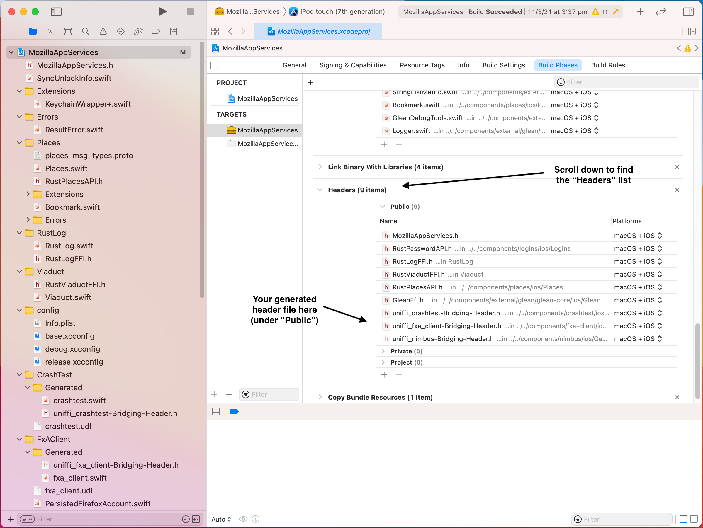
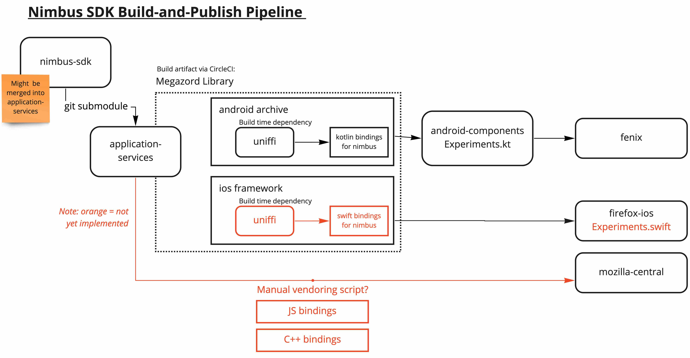
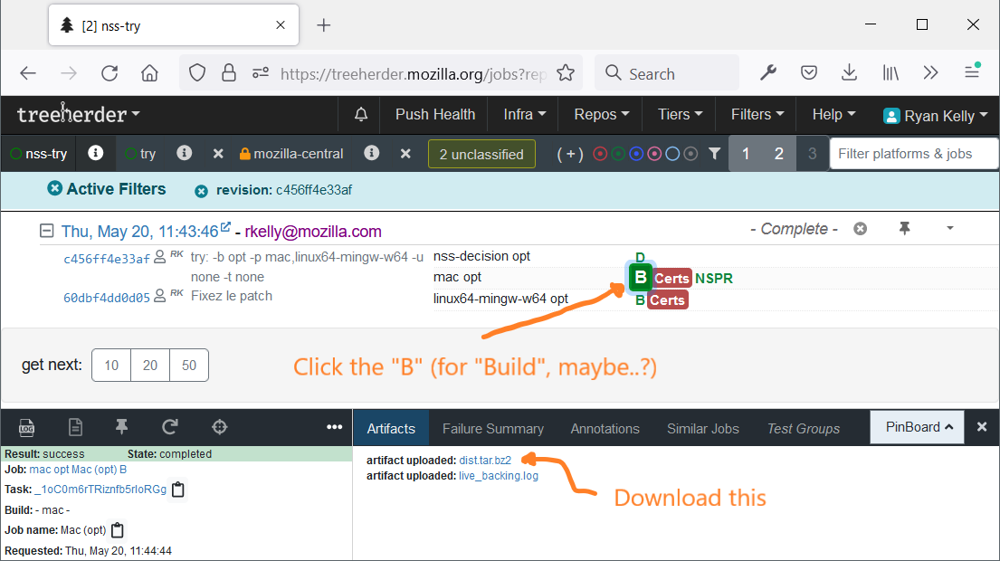

application-services Rust Components
Application Services (a-s) is collection of Rust Components that are used to enable Firefox applications to integrate with Firefox accounts, sync, experimentation, etc. Each component is built using a core of shared code written in Rust, wrapped with native language bindings for different platforms.
To contact us you can:
- Find us in the chat #rust-components:mozilla.org (How to connect)
- To report issues or request changes, file a bug in Bugzilla for Firefox :: Sync
The source code is available on GitHub.
License
The Application Services Source Code is subject to the terms of the Mozilla Public License v2.0. You can obtain a copy of the MPL at https://mozilla.org/MPL/2.0/.
Contributing to Application Services
Anyone is welcome to help with the Application Services project. Feel free to get in touch with other community members on Matrix, the mailing list or through issues here on GitHub.
- Matrix: #sync:mozilla.org
- Mailing list: https://mail.mozilla.org/listinfo/sync-dev
- and of course, the issues list
Participation in this project is governed by the Mozilla Community Participation Guidelines.
Bug Reports
You can file issues here on GitHub. Please try to include as much information as you can and under what conditions you saw the issue.
Building the project
Build instructions are available here. Do not hesitate to let us know which pain-points you had with setting up your environment!
Finding issues
Below are a few different queries you can use to find appropriate issues to work on. Feel free to reach out if you need any additional clarification before picking up an issue.
- good first issues - If you are a new contributor, search for issues labeled
good-first-issue - good second issues Once you've got that first PR approved and you are looking for something a little more challenging, we are keeping a list of next-level issues. Search for the
good-second-issuelabel. - papercuts A collection of smaller sized issues that may be a bit more advanced than a first or second issue.
- important, but not urgent - For more advanced contributors, we have a collection of issues that we consider important and would like to resolve sooner, but work isn't currently prioritized by the core team.
Sending Pull Requests
Patches should be submitted as pull requests (PRs).
Before submitting a PR:
- Your patch should include new tests that cover your changes, or be accompanied by explanation for why it doesn't need any. It is your and your reviewer's responsibility to ensure your patch includes adequate tests.
- Consult the testing guide for some tips on writing effective tests.
- Your code should pass all the automated tests before you submit your PR for review.
- Before pushing your changes, run
./automation/tests.py changes. This will calculate which components were changed and run test suites against them, as well as linters and formatters. Because it runs a limited set of tests, it should execute in a fairly reasonable amount of time. - After you open a PR, our CI system will run a full test suite. It's possible that this step will result in errors not caught with changes mode, so make sure to check the results.
- "Work in progress" pull requests are welcome, but should be clearly labeled as such and should not be merged until all tests pass and the code has been reviewed.
- You can label pull requests as "Work in progress" by using the Github PR UI to indicate this PR is a draft (learn more about draft PRs).
- Before pushing your changes, run
- Run
cargo fmtto ensure your Rust code is correctly formatted. You should run this command after running tests and before pushing changes so that any fixes for failed tests are included.- If you have modified any Swift code, also run
swiftformat --swiftversion 4on the modified code.
- If you have modified any Swift code, also run
- Your patch should include a changelog entry in CHANGES_UNRELEASED.md or an explanation of why it does not need one. Any breaking changes to Swift or Kotlin binding APIs should be noted explicitly
- If your patch adds new dependencies, they must follow our dependency management guidelines. Please include a summary of the due dilligence applied in selecting new dependencies.
When submitting a PR:
- You agree to license your code under the project's open source license (MPL 2.0).
- Base your branch off the current
mainbranch. - Add both your code and new tests if relevant.
- Please do not include merge commits in pull requests; include only commits with the new relevant code.
- We encourage you to GPG sign your commits.
Code Review
This project is production Mozilla code and subject to our engineering practices and quality standards. Every patch must be peer reviewed by a member of the Application Services team.
Building Application Services
When working on application-services Rust Components it's important to set up your environment for both building the application-services library, but also for Android or iOS as appropriate to test your changes in our clients.
First time builds
Building for the first time is more complicated than a typical Rust project. To build for an end-to-end experience that enables you to test changes in our client applications like Fenix and Firefox iOS, there are a number of build systems required for all the dependencies. The initial setup is likely to take a number of hours to complete.
Building the Rust Components
Complete this section before moving to the android/iOS build instructions.
- Make sure you cloned the repository:
$ git clone https://github.com/mozilla/application-services # (or use the ssh link)
$ cd application-services
$ git submodule init
$ git submodule update --recursive
- Install Rust: install via rustup
- Install your system dependencies: - install via the instructions below for Linux, MacOS or Windows
- Check dependencies, environment variables and test
- Run:
./libs/verify-desktop-environment.sh - Run:
cargo test
- Run:
Once you have successfully run ./libs/verify-desktop-environment.sh and cargo test you can move to the Building for Fenix and Building for iOS sections below to setup your local environment for testing with our client applications.
Linux
- Install the system dependencies required for building NSS
- Install gyp:
apt install gyp(required for NSS) - Install ninja-build: via package for distribution
- Install python3: 3.6 via python.org
- Install zlib:
apt install zlib1g-dev - Install the system dependencies required for SQLcipher
- Install tcl:
apt install tclsh(required for SQLcipher)
MacOS
- Install Xcode: check the ci config for the correct version.
- Install Xcode tools:
xcode-select --install - Install homebrew: via homebrew (its what we use for ci)
- Install the system dependencies required for building NSS
- Install ninja:
brew install ninja - Install gyp (via https://github.com/mogemimi/pomdog/wiki/How-to-Install-GYP)
- Install ninja:
- Install swift-protobuf:
brew install swift-protobuf
Windows
Install windows build tools
Why Windows Subsystem for Linux (WSL)?
It's currently tricky to get some of these builds working on Windows, primarily due to our use of SQLcipher. By using WSL it is possible to get builds working, but still have them published to your "native" local maven cache so it's available for use by a "native" Android Studio.
- Install WSL (recommended over native tooling)
- Install unzip:
sudo apt install unzip - Install python3:
sudo apt install python3Note: must be python 3.6 - Install system build tools:
sudo apt install build-essential - Install zlib:
sudo apt-get install zlib1g-dev - Install tcl:
sudo apt install tcl-dev
Building for Fenix
The instructions here assume that you are building for Fenix in order test your changes in Fenix and want to take advantage of the Fenix Auto-publication workflow for android-components and application-services
- Install Android SDK, JAVA, NDK and set required env vars
- Clone the Fenix repository (not in a-s)
- Clone the android-components repository (not in a-s)
- Install [Java 8] for your system
- Set
JAVA_HOMEto point to the JDK 8 installation directory. - Download and install Android Studio
- Set
ANDROID_SDK_ROOTandANDROID_HOMEto the Android Studio sdk location and add it to your rc file. - Configure the required versions of NDK
Configure menu > System Settings > Android SDK > SDK Tools > NDK > Show Package Details > NDK (Side by side)- 21.3.6528147 (required by Fenix)
- 21.0.6113669 (required by a-s)
- If you are on Windows using WSL - drop to the section below, Windows setup for Android (WSL) before proceeding.
- Check dependencies, environment variables and test
- Run
./libs/verify-android-environment.sh - Follow instructions and rerun until it is successful.
- Run
Windows setup for Android (via WSL)
Note: For non-Ubuntu linux versions, it may be necessary to execute $ANDROID_HOME/tools/bin/sdkmanager "build-tools;26.0.2" "platform-tools" "platforms;android-26" "tools". See also this gist for additional info.
Configure Maven
Configure maven to use the native windows maven repository - then, when doing ./gradlew install from WSL, it ends up in the Windows maven repo. This means we can do a number of things with Android Studio in "native" windows and have then work correctly with stuff we built in WSL.
- Install maven:
sudo apt install maven - Confirm existence of (or create) a
~/.m2folder - In the
~/.m2create a file calledsettings.xml - Add the content below replacing
{username}with your username:
<settings>
<localRepository>/mnt/c/Users/{username}/.m2/repository</localRepository>
</settings>
Building for Firefox iOS
- Install Carthage:
brew install carthage - Install xcpretty:
gem install xcpretty - Run
./libs/verify-ios-environment.shto check your setup and environment variables. - Make any corrections recommended by the script and re-run.
- Follow the guide for using local a-s builds in iOS
Note: The built Xcode project is located at
megazords/ios/MozillaAppServices.xcodeproj.
Using locally-published components in Fenix
It's often important to test work-in-progress changes to this repo against a real-world consumer project. The most reliable method of performing such testing is to publish your components to a local Maven repository, and adjust the consuming project to install them from there.
With support from the upstream project, it's possible to do this in a single step using our auto-publishing workflow.
Using the auto-publishing workflow
Some consumers (notably Fenix) have support for automatically publishing and including a local development version of application-services in their build. The workflow is:
-
Check out the consuming project.
-
Edit (or create) the file
local.propertiesin the consuming project and tell it where to find your local checkout of application-services, by adding a line like:autoPublish.application-services.dir=relative/path/to/your/checkout/of/application-servicesNote that the path should be relative from the root of the consumer's directory. For example, if
application-servicesandfenixare at the same level, the relative path would be../application-services -
Build the consuming project following its usual build procedure, e.g. via
./gradlew assembleDebugor./gradlew test.
If all goes well, this should automatically build your checkout of application-servies, publish it to a local maven repository, and configure the consuming project to install from there instead of from our published releases.
Using a manual workflow
Note: This is a bit tedious, and you should first try the auto-publishing workflow described above. But if the auto-publishing workflow bitrots then it's important to know how to do it by hand. Since most consuming apps get their copy of application-services via a dependency on android-components, this procedure involves three separate repos:
-
Inside the
application-servicesrepository root:-
In
.buildconfig-android.yml, changelibraryVersionto end in-TESTING$N1, where$Nis some number that you haven't used for this before.Example:
libraryVersion: 0.27.0-TESTING3 -
Check your
local.propertiesfile, and addrust.targets=x86if you're testing on the emulator,rust.targets=armif you're testing on 32-bit arm (arm64 for 64-bit arm, etc). This will make the build that's done in the next step much faster. -
Run
./gradlew publishToMavenLocal. This may take between 5 and 10 minutes.
-
-
Inside the
android-componentsrepository root:-
In
.buildconfig.yml, changecomponentsVersionto end in-TESTING$N1, where$Nis some number that you haven't used for this before.Example:
componentsVersion: 0.51.0-TESTING3 -
Inside
buildSrc/src/main/java/Dependencies.kt, changemozilla_appservicesto reference thelibraryVersionyou published in step 1 part 1.Example:
const val mozilla_appservices = "0.27.0-TESTING3" -
Inside
build.gradle, addmavenLocal()insideallprojects { repositories { <here> } }. -
Inside the android-components
local.propertiesfile, ensureautoPublish.application-services.diris NOT set. -
Run
./gradlew publishToMavenLocal.
-
-
Inside the consuming project repository root:
-
Inside
build.gradle, addmavenLocal()insideallprojects { repositories { <here> } }. -
Ensure that
local.propertiesdoes not contain any configuration to related to auto-publishing the application-services repo. -
Inside
buildSrc/src/main/java/Dependencies.kt, change the version numbers for android-components and/or application-services to match the new versions you defined above.Example:
const val mozilla_android_components = "0.51.0-TESTING3"Example:
const val mozilla_appservices = "0.27.0-TESTING3"
-
You should now be able to build and run the consuming application (assuming you could do so before all this).
Caveats
- This assumes you have followed the android/rust build setup
- Make sure you're fully up to date in all repos, unless you know you need to not be.
- This omits the steps if changes needed because, e.g. application-services made a breaking change to an API used in android-components. These should be understandable to fix, you usually should be able to find a PR with the fixes somewhere in the android-component's list of pending PRs (or, failing that, a description of what to do in the application-services changelog).
- Ask in #sync if you get stuck.
Adding support for the auto-publish workflow
If you had to use the manual workflow above and found it incredibly tedious, you might like to try adding support for the auto-publish workflow to the consuming project! The details will differ depending on the specifics of the project's build setup, but at a high level you will need to:
-
In your settings.gradle, locate (or add) the code for parsing the
local.propertiesfile, and add support for loading a directory path from the propertyautoPublish.application-services.dir.If this property is present, spawn a subprocess to run
./gradlew autoPublishForLocalDevelopmentin the specified directory. This automates step (1) of the manual workflow above, publishing your changes to application-services into a local maven repository under a unique version number. -
In your build.gradle, if the
autoPublish.application-services.dirproperty is present, have each project apply the build script from./build-scripts/substitute-local-appservices.gradlein the specified directory.This automates steps (2) and (3) of the manual workflow above, using gradle's dependency substitution capabilities to override the verion requirements for application-services components. It may be necessary to experiment with the ordering of this relative to other build configuration steps, in order for the dependency substitution to work correctly.
For a single-project build this would look something like:
if (gradle.hasProperty('localProperties.autoPublish.application-services.dir')) { ext.appServicesSrcDir = gradle."localProperties.autoPublish.application-services.dir" apply from: "${appServicesSrcDir}/build-scripts/substitute-local-appservices.gradle" }For a multi-project build it should be applied to all subprojects, like:
subprojects { if (gradle.hasProperty('localProperties.autoPublish.application-services.dir')) { ext.appServicesSrcDir = gradle."localProperties.autoPublish.application-services.dir" apply from: "${rootProject.projectDir}/${appServicesSrcDir}/build-scripts/substitute-local-appservices.gradle" } } -
Confirm that the setup is working, by adding
autoPublish.application-services.dirto yourlocal.propertiesfile and running./gradlew dependenciesfor the project.You should be able to see gradle checking the build status of the various application-services dependencies as part of its setup phase. When the command completes, it should print the resolved versions of all dependencies, and you should see that application-services components have a version number in the format
0.0.1-SNAPSHOT-{TIMESTAMP}.
[1]: It doesn't have to start with -TESTING, it only needs
to have the format -someidentifier. -SNAPSHOT$N is also very common to use,
however without the numeric suffix, this has specific meaning to gradle, so we
avoid it. Additionally, while the $N we have used in our running example has
matched (e.g. all of the identifiers ended in -TESTING3, this is not required,
so long as you match everything up correctly at the end. This can be tricky, so
I always try to use the same number).
Using locally-published components in Firefox for iOS
It's often important to test work-in-progress changes to this repo against a real-world consumer project. Here are our current best-practices for approaching this on iOS:
-
Make a local build of the application-services framework using
./build-carthage.sh. -
Checkout and
carthage bootstrapthe consuming app (for example using these instructions with Firefox for iOS). -
In the consuming app, replace the application-services framework with a copy of your local build. For example:
rm -rf Carthage/Build/iOS/MozillaAppServices.framework rsync -ad path/to/application-services/Carthage/Build/iOS/MozillaAppServices.framework/ Carthage/Build/iOS/MozillaAppServices.framework/ -
Open the consuming app project in XCode and build it from there.
After making changes to application-services code, you will need to re-run these steps in order to copy the latest changes over into the consuming app.
Firefox for iOS also has a helper script that automates these steps:
appservices_local_dev.sh.
Building and using a locally-modified version of JNA
Java Native Access is an important dependency for the Application Services components on Android, as it provides the low-level interface from the JVM into the natively-compiled Rust code.
If you need to work with a locally-modified version of JNA (e.g. to investigate an apparent JNA bug) then you may find these notes helpful.
The JNA docs do have an Android Development Environment guide that is a good starting point, but the instructions did not work for me and appear a little out of date. Here are the steps that worked for me:
-
Modify your environment to specify
$NDK_PLATFORM, and to ensure the Android NDK tools for each target platform are in your$PATH. On my Mac with Android Studio the config was as follows:export NDK_ROOT="$HOME/Library/Android/sdk/ndk/21.3.6528147" export NDK_PLATFORM="$NDK_ROOT/platforms/android-21" export PATH="$PATH:$NDK_ROOT/toolchains/llvm/prebuilt/darwin-x86_64/bin" export PATH="$PATH:$NDK_ROOT/toolchains/aarch64-linux-android-4.9/prebuilt/darwin-x86_64/bin" export PATH="$PATH:$NDK_ROOT/toolchains/arm-linux-androideabi-4.9/prebuilt/darwin-x86_64/bin" export PATH="$PATH:$NDK_ROOT/toolchains/x86-4.9/prebuilt/darwin-x86_64/bin" export PATH="$PATH:$NDK_ROOT/toolchains/x86_64-4.9/prebuilt/darwin-x86_64/bin"You will probably need to tweak the paths and version numbers based on your operating system and the details of how you installed the Android NDK.
-
Install the
antbuild tool (usingbrew install antworked for me). -
Checkout the JNA source from Github. Try doing a basic build via
ant distandant test. This won't build for Android but will test the rest of the tooling. -
Adjust
./native/Makefilefor compatibility with your Android NSK install. Here's what I had to do for mine:- Adjust the
$CCvariable to use clang instead of gcc:CC=aarch64-linux-android21-clang. - Adjust thd
$CCPvariable to use the version from your system:CPP=cpp. - Add
-landroid -llogto the list of libraries to link against in$LIBS.
- Adjust the
-
Build the JNA native libraries for the target platforms of interest:
ant -Dos.prefix=android-aarch64ant -Dos.prefix=android-armv7ant -Dos.prefix=android-x86ant -Dos.prefix=android-x86-64
-
Package the newly-built native libraries into a JAR/AAR using
ant dist. This should produce./dist/jna.aar. -
Configure
build.gradlefor the consuming application to use the locally-built JNA artifact:// Tell gradle where to look for local artifacts. repositories { flatDir { dirs "/PATH/TO/YOUR/CHECKOUT/OF/jna/dist" } } // Tell gradle to exclude the published version of JNA. configurations { implementation { exclude group: "net.java.dev.jna", module:"jna" } } // Take a direct dependency on the local JNA AAR. dependencies { implementation name: "jna", ext: "aar" } -
Rebuild and run your consuming application, and it should be using the locally-built JNA!
If you're trying to debug some unexpected JNA behaviour (and if you favour old-school printf-style debugging) then you can this code snippet to print to the Android log from the compiled native code:
#ifdef __ANDROID__
#include <android/log.h>
#define HACKY_ANDROID_LOG(...) __android_log_print(ANDROID_LOG_VERBOSE, "HACKY-DEBUGGING-FOR-ALL", __VA_ARGS__)
#else
#define HACKY_ANDROID_LOG(MSG)
#endif
HACKY_ANDROID_LOG("this will go to the android logcat output");
HACKY_ANDROID_LOG("it accepts printf-style format sequences, like this: %d", 42);
Guide to Testing a Rust Component
This document gives a high-level overview of how we test components in application-services. It will be useful to you if you're adding a new component, or working on increasing the test coverage of an existing component.
If you are only interested in running the existing test suite, please consult the contributor docs and the tests.py script.
Unit and Functional Tests
Rust code
Since the core implementation of our components lives in rust, so does the core of our testing strategy.
Each rust component should be accompanied by a suite of unittests, following the guidelines for writing tests from the Rust Book. Some additional tips:
-
Where possible, it's better use use the Rust typesystem to make bugs impossible than to write tests to assert that they don't occur in practice. But given that the ultimate consumers of our code are not in Rust, that's sometimes not possible. The best idiomatic Rust API for a feature is not necessarily the best API for consuming it over an FFI boundary!
-
Rust's builtin assertion macros are pretty spartan; we use the more_asserts for some additional helpers.
-
Rust's strict typing can make test mocks difficult. If there's something you need to mock out in tests, make it a Trait and use the mockiato crate to mock it out.
The Rust tests for a component should be runnable via cargo test.
FFI Layer code
We currently do not test the FFI-layer Rust code for our components, since it's generally a very thin wrapper around the underlying (and in theory well-tested!) Rust component code. If you find yourself adding a particularly complex bit of code in an FFI-layer crate, add unittests in the same style as for other Rust code.
(Editor's note: I remain hopeful that one day we'll autogenerate most of the FFI-layer code, and in such a world we don't need to invest in tests for it.)
Kotlin code
The Kotlin wrapper code for a component should have its own test suite, which should follow the general guidelines for testing Android code in Mozilla projects. In practice that means we use JUnit as the test framework and Robolectric to provide implementations of Android-specific APIs.
The Kotlin tests for a component should be runnable via ./gradlew <component>:test.
The tests at this layer are designed to ensure that the API binding code is working as intended, and should not repeat tests for functionality that is already well tested at the Rust level. But given that the Kotlin bindings involve a non-trivial amount of hand-written boilerplate code, it's important to exercise that code throughly.
One complication with running Kotlin tests is that the code needs to run on your local development machine,
but the Kotlin code's native dependencies are typically compiled and packaged for Android devices. The
tests need to ensure that an appropriate version of JNA and of the compiled Rust code is available in
their library search path at runtime. Our build.gradle files contain a collection of hackery that ensures
this, which should be copied into any new components.
(Editor's note: I remain hopeful that one day we'll autogenerate most of the Kotlin binding code, and in such a world we don't need to invest in tests for it.)
XXX TODO: talk about proguard? I don't really understand it...
XXX TODO: any additional tips here, such as mocking out storage etc?
Swift code
The Swift wrapper code for a component should have its own test suite, using Apple's XCode unittest framework.
Due to the way that all rust components need to be compiled together into a single "megazord"
framework, this entire respository is a single XCode project. The Swift tests for each component
thus need to live under megazords/ios/MozillaAppServicesTests/ rather than in the directory
for the corresponding component. (XXX TODO: is this true? it would be nice to find a way to avoid havining
them live separately because it makes them easy to overlook).
The tests at this layer are designed to ensure that the API binding code is working as intended, and should not repeat tests for functionality that is already well tested at the Rust level. But given that the Swift bindings involve a non-trivial amount of hand-written boilerplate code, it's important to exercise that code throughly.
(Editor's note: I remain hopeful that one day we'll autogenerate most of the Swift binding code, and in such a world we don't need to invest in tests for it.)
XXX TODO: any additional tips here, such as mocking out storage etc?
Integration tests
End-to-end Sync Tests
The testing/sync-test directory contains a test harness for running sync-related
Rust components against a live Firefox Sync infrastructure, so that we can verifying the functionality
end-to-end.
Each component that implements a sync engine should have a corresponding suite of tests in this directory.
- XXX TODO: places doesn't.
- XXX TODO: send-tab doesn't (not technically a sync engine, but still, it's related)
- XXX TODO: sync-manager doesn't
Android Components Test Suite
It's important that changes in application-services are tested against upstream consumer code in the android-components repo. This is currently a manual process involving:
- Configuring your local checkout of android-components to use your local application-services build.
- Running the android-components test suite via
./gradle test. - Manually building and running the android-components sample apps to verify that they're still working.
Ideally some or all of this would be automated and run in CI, but we have not yet invested in such automation.
Test Coverage
Lamentably, we do not measure or report on code test coverage. See this github issue for some early explorations.
The rust ecosystem for code coverage is still maturing, with cargo-tarpaulin appearing to be a promising candidate. However, such tools will only report code that is exercised by the rust unittests, not code that is exercised by the Kotlin or Swift tests or the end-to-end integration test suite.
For code coverage to be useful to us, we need to either:
- Commit to ensuring high coverage via rust-level tests alone, or
- Figure out how to measure it for code being driven by non-rust test suites.
Ideas for Improvement
- ASan, Memsan, and maybe other sanitizer checks, especially around the points where we cross FFI boundaries.
- General-purpose fuzzing, such as via https://github.com/jakubadamw/arbitrary-model-tests
- We could consider making a mocking backend for viaduct, which would also be mockable from Kotlin/Swift.
- Add more end-to-end integration tests!
- Live device tests, e.g. actual Fenixes running in an emulator and syncing to each other.
- Run consumer integration tests in CI against main.
Smoke testing Application Services against end-user apps
This is a great way of finding integration bugs with application services. It can be done manually using substitution scripts, but we also have scripts that will do all of these for you.
Firefox iOS
The automation/smoke-test-firefox-ios.py script will clone (or use a local version) of Firefox iOS and
run tests against the current application-services worktree.
Add the -h argument to discover all of the script's exciting options!
Android Components
The automation/smoke-test-android-components.py script will clone (or use a local version) of
android-components and run a subset of its tests against the current application-services worktree.
It tries to only run tests that might be relevant to application-services functionality.
Fenix
The automation/smoke-test-fenix.py script will clone (or use a local version) of Fenix and
run tests against the current application-services worktree.
Testing faster: How to avoid making compile times worse by adding tests
Background
We'd like to keep cargo test, cargo build, cargo check, ... reasonably
fast, and we'd really like to keep them fast if you pass -p for a specific
project. Unfortunately, there are a few ways this can become unexpectedly slow.
The easiest of these for us to combat at the moment is probably unfortunate
placement of dev-dependencies in our build graph.
If you perform a cargo test -p foo, all dev-dependencies of foo must be
compiled before foo's tests can start. This includes dependencies only used
non-test targets, such as examples or benchmarks.
In an ideal world, cargo could run your tests as soon as it finished with the dependencies it needs for those tests, instead of waiting for your benchmark suite, or the arg-parser your examples use, or etc.
Unfortunately, all cargo knows is that these are dev-dependencies, and not
which targets actually use them. (Aside: Now that per-target feature selection
is stable we actually could fix this, however it would be extremely tedious, far
worse than the approach outlined in this document).
Additionally, unqualified invocations of cargo (that is, without -p) might
have an even worse time if we aren't careful. If I run, cargo test, cargo
knows every crate in the workspace needs to be built with all dev
dependencies, if places depends on fxa-client, all of fxa-clients
dev-dependencies must be compiled, ready, and linked in at least to the lib
target before we can even think about starting on places.
This should all sound somewhat obvious, and I guess it is. We have not been careful about what shape the dependency graph ends up as when example code is taken into consideration (as it is by cargo during certain builds), and as a result, we have this problem. The problem is that this isn't really a problem we want to fix: Example code can and should depend on several different components, and use them together in interesting ways.
So, because we don't really want to change the things our examples do, or make major architectural changes of the non-test code for something like this, we need to do something.
The Solution
To fix this, we manually insert "cuts" into the dependency graph to help cargo out. That is, we pull some of these build targets (e.g. examples, benchmarks, tests if they cause a substantial compile overhead) into their own dedicated crates so that:
- They can be built in parallel with each other.
- Crates depending on the component itself are not waiting on the test/bench/example build in order for their test build to begin.
- A potentially smaller set of our crates need to be rebuilt -- and a smaller set of possible configurations exist meaning fewer items to add pressure to caches.
- ...
There's no firm rule for this, but the following guidelines seem easy to follow:
Basically, some rules of thumb for when / when not to do this:
-
All rust examples should be put in
examples/*. -
All rust benchmarks should be put in
testing/separated/*. See the section below on how to set your benchmark up to avoid redundant compiles. -
Rust tests which brings in heavyweight dependencies should be evaluated on an ad-hoc basis. If you're concerned, measure how long compilation takes with/without, and consider how many crates depend on the crate where the test lives (e.g. a slow test in support/foo might be far worse than one in a leaf crate), etc...
Appendix: How to avoid redundant compiles for benchmarks and integration tests
To be clear, this is way more important for benchmarks (which always compile as release and have a costly link phase).
Anyway, say you have a directory structure like the following:
mycrate
├── src
│ └── lib.rs
| ...
├── benches
│ ├── bench0.rs
| ├── bench1.rs
│ └── bench2.rs
├── tests
│ ├── test0.rs
| ├── test1.rs
│ └── test2.rs
└── ...
When you run your integration tests or benchmarks, each of test0, test1,
test2 or bench0, bench1, bench2 is compiled as it's own crate that runs
the tests in question and exits.
That means 3 benchmark executables are built on release settings, and 3 integration test executables.
If you've ever tried to add a piece of shared utility code into your integration
tests, only to have cargo (falsely) complain that it is dead code: this is why.
Even if test0.rs and test2.rs both use the utility function, unless
every test crate uses every shared utility, the crate that doesn't will
complain.
(Aside: This turns out to be an unintentional secondary benefit of this approach
-- easier shared code among tests, without having to put a
#![allow(dead_code)] in your utils.rs. We haven't hit that very much here,
since we tend to stick to unit tests, but it came up in mentat several times,
and is a frequent complaint people have)
Anyway, the solution here is simple: Create a new crate. If you were working in
components/mycrate and you want to add some integration tests or benchmarks,
you should do cargo new --lib testing/separated/mycrate-test (or
.../mycrate-bench).
Delete .../mycrate-test/src/lib.rs. Yep, really, we're making a crate that
only has integration tests/benchmarks (See the "FAQ0" section at the bottom of
the file if you're getting incredulous).
Now, add a src/tests.rs or a src/benches.rs. This file should contain mod foo; declarations for each submodule containing tests/benchmarks, if any.
For benches, this is also where you set up the benchmark harness (refer to benchmark library docs for how).
Now, for a test, add: into your Cargo.toml
[[test]]
name = "mycrate-test"
path = "src/tests.rs"
and for a benchmark, add:
[[test]]
name = "mycrate-benches"
path = "src/benches.rs"
harness = false
Because we aren't using src/lib.rs, this is what declares which file is the
root of the test/benchmark crate. Because there's only one target (unlike with
tests/* / benches/* under default settings), this will compile more quickly.
Additionally, src/tests.rs and src/benches.rs will behave like a normal
crate, the only difference being that they don't produce a lib, and that they're
triggered by cargo test/cargo run respectively.
FAQ0: Why put tests/benches in src/* instead of disabling autotests/autobenches
Instead of putting tests/benchmarks inside src, we could just delete the src
dir outright, and place everything in tests/benches.
Then, to get the same one-rebuild-per-file behavior that we'll get in src, we
need to add autotests = false or autobenches = false to our Cargo.toml,
adding a root tests/tests.rs (or benches/benches.rs) containing mod decls
for all submodules, and finally by referencing that "root" in the Cargo.toml
[[tests]] / [[benches]] list, exactly the same way we did for using src/*.
This would work, and on the surface, using tests/*.rs and benches/*.rs seems
more consistent, so it seems weird to use src/*.rs for these files.
My reasoning is as follows: Almost universally, tests/*.rs, examples/*.rs, benches/*.rs`, etc. are automatic. If you add a test into the tests folder, it
will run without anything else.
If we're going to set up one-build-per-{test,bench}suite as I described, this
fundamentally cannot be true. In this paradigm, if you add a test file named
blah.rs, you must add a mod blah it to the parent module.
It seems both confusing and error-prone to use tests/*, but have it behave
that way, however this is absolutely the normal behavior for files in src/*.rs
-- When you add a file, you then need to add it to it's parent module, and this
is something Rust programmers are pretty used to.
(In fact, we even replicated this behavior (for no reason) in the places
integration tests, and added the mod declarations to a "controlling" parent
module -- It seems weird to be in an environment where this isn't required)
So, that's why. This way, we make it way less likely that you add a test file
to some directory, and have it get ignored because you didn't realize that in
this one folder, you need to add a mod mytest into a neighboring tests.rs.
Dependency Management Guidelines
This repo uses third-party code from a variety of sources, so we need to be mindful of how these dependencies will affect our consumers. Considerations include:
- General code quality.
- Licensing compatibility.
- Handling of security vulnerabilities.
- The potential for supply-chain compromise.
We're still evolving our policies in this area, but these are the guidelines we've developed so far.
Rust Code
Unlike Firefox,
we do not vendor third-party source code directly into the repo. Instead we rely on
Cargo.lock and its hash validation to ensure that each build uses an identical copy
of all third-party crates. These are the measures we use for ongoing maintence of our
existing dependencies:
- Check
Cargo.lockinto the repository. - Generate built artifacts using the
--lockedflag tocargo build, as an additional assurance that the existingCargo.lockwill be respected.- TODO: how to actually make this happen via rust-android-gradle plugin?
- Regularly run cargo-audit in CI to alert us to
security problems in our dependencies.
- It runs on every PR, and once per hour as a scheduled job with failures reported to slack.
- Use a home-grown tool to generate a summary of dependency licenses
and to check them for compatibility with MPL-2.0.
- Check these summaries into the repository and have CI alert on unexpected changes, to guard against pulling in new versions of a dependency under a different license.
Adding a new dependency, whether we like it or not, is a big deal - that dependency and everything it brings with it will become part of Firefox-branded products that we ship to end users. We try to balance this responsibility against the many benefits of using existing code, as follows:
- In general, be conservative in adding new third-party dependencies.
- For trivial functionality, consider just writing it yourself. Remember the cautionary tale of left-pad.
- Check if we already have a crate in our dependency tree that can provide the needed functionality.
- Prefer crates that have a a high level of due-dilligence already applied, such as:
- Crates that are already vendored into Firefox.
- Crates from rust-lang-nursery.
- Crates that appear to be widely used in the rust community.
- Check that it is clearly licensed and is MPL-2.0 compatible.
- Take the time to investigate the crate's source and ensure it is suitably high-quality.
- Be especially wary of uses of
unsafe, or of code that is unusually resource-intensive to build. - Dev dependencies do not require as much scrutiny as dependencies that will ship in consuming applications,
but should still be given some thought.
- There is still the potential for supply-chain compromise with dev dependencies!
- Be especially wary of uses of
- As part of the PR that introduces the new dependency:
- Regenerate dependency summary files using the regenerate_dependency_summaries.sh.
- Explicitly describe your consideration of the above points.
Updating to new versions of existing dependencies is a normal part of software development and is not accompanied by any particular ceremony.
Android/Kotlin Code
We currently depend only on the following Kotlin dependencies:
We currently depend on the following developer dependencies in the Kotlin codebase, but they do not get included in built distribution files:
- detekt
- ktlint
No additional Kotlin dependencies should be added to the project unless absolutely necessary.
iOS/Swift Code
We currently depend only on the following dependencies:
No additional Swift dependencies should be added to the project unless absolutely necessary.
Other Code
We currently depend on local builds of the following system dependencies:
No additional system dependencies should be added to the project unless absolutely necessary.
Adding a new component to Application Services
Each component in the Application Services repo has three parts (the Rust code, the Kotlin wrapper, and the Swift wrapper) so there are quite a few moving parts involved in adding a new component. This is a rapid-fire list of all the things you'll need to do if adding a new component from scratch.
The Rust Code
Your component should live under ./components in this repo.
Use cargo new --lib ./components/<your_crate_name>to create a new library crate,
and please try to avoid using hyphens in the crate name.
See the Guide to Building a Rust Component for general advice on designing and structuring the actual Rust code, and follow the Dependency Management Guidelines if your crate introduces any new dependencies.
Use UniFFI to define how your crate's
API will get exposed to foreign-language bindings. By convention, put the interface
definition file at ./components/<your_crate_name>/<your_crate_name>.udl. Use
the builtin-bindgen feature of UniFFI to simplify the build process, by
putting this in your Cargo.toml:
[build-dependencies]
uniffi_build = { version = "<latest version here>", features=["builtin-bindgen"] }
Include your new crate in the application-services workspace, by adding
it to the members and default-members lists in the Cargo.toml at
the root of the repository.
In order to be published to consumers, your crate must be included in the "megazord" crate for each target platform:
- For Android, add it as a dependency in
./megazords/full/Cargo.tomland add apub use <your_crate_name>to./megazords/full/src/lib.rs. - For iOS, add it as a dependency in
./megazords/ios/rust/Cargo.tomland add apub use <your_crate_name>to./megazords/ios/rust/src/lib.rs.
Run cargo check -p <your_crate_name> in the repository root to confirm that
things are configured properly. This will also have the side-effect of updating
Cargo.lock to contain your new crate and its dependencies.
The Kotlin Bindings
Make a ./components/<your_crate_name>/android subdirectory to contain
Kotlin- and Android-specific code. This directory will contain a gradle
project for building your Kotlin bindings.
Copy the build.gradle file from ./components/crashtest/android/ into
your own component's directory, and edit it to replace the references to
crashtest.udl with your own component's .udl file.
Create a file ./components/<your_crate_name>/uniffi.toml with the
following contents:
[bindings.kotlin]
package_name = "mozilla.appservices.<your_crate_name>"
cdylib_name = "megazord"
Create a file ./components/<your_crate_name>/android/src/main/AndroidManifest.xml
with the following contents:
<manifest xmlns:android="http://schemas.android.com/apk/res/android"
package="org.mozilla.appservices.<your_crate_name>" />
In the root of the repository, edit .buildconfig-android.ymlto add
your component's metadata. This will cause it to be included in the
gradle workspace and in our build and publish pipeline. Check whether
it builds correctly by running:
./gradlew <your_crate_name>:assembleDebug
You can include hand-written Kotlin code alongside the automatically generated bindings, by placing `.kt`` files in a directory named:
./android/src/test/java/mozilla/appservices/<your_crate_name>/
You can write Kotlin-level tests that consume your component's API, by placing `.kt`` files in a directory named:
./android/src/test/java/mozilla/appservices/<your_crate_name>/.
So you would end up with a directory structure something like this:
components/<your_crate_name>/Cargo.tomluniffi.tomlsrc/- Rust code here.
android/build.gradlesrc/main/AndroidManifest.xmljava/mozilla/appservices/<your_crate_name>/- Hand-written Kotlin code here.
test/java/mozilla/appservices/<your_crate_name>/- Kotlin test-cases here.
Run your component's Kotlin tests with ./gradlew <your_crate_name>:test
to confirm that this is all working correctly.
The Swift Bindings
Make a ./components/<your_crate_name>/ios subdirectory to contain
Swift- and iOS-specific code. The UniFFI-generated swift bindings will
be written to a subdirectory named Generated.
You can include hand-written Swift code alongside the automatically
generated bindings, by placing .swift files in a directory named:
./ios/<your_crate_name>/.
So you would end up with a directory structure something like this:
components/<your_crate_name>/Cargo.tomluniffi.tomlsrc/- Rust code here.
ios/<your_crate_name>/- Hand-written Swift code here.
Generated/- Generated Swift code will be written into this directory.
Edit megazords/ios/MozillaAppServices.h and add an import line for your component,
like:
#import "uniffi_<your_crate_name>_Bridging-Header.h"
You will then need to add your component into the iOS "megazord" XCode project, which can only really by done using the XCode application, which can only really be done if you're on a Mac.
Open megazords/ios/MozillaAppServices.xcodeproj in XCode.
In the Project navigator, add a new Group for your new component, pointing to
the ./ios/ directory you created above. Add the following entries to the Group:
- The
.udlfile for you component, from../src/<your_crate_name>.udl. - Any hand-written
.swiftfiles for your component - A sub-group named "Generated", pointing to the
./Generated/subdirectory, and containing entries for the files generated by UniFFI:<your_crate_name>.swiftuniffi_<your_crate_name>-Bridging-Header.h
The result should look something like this:

Click on the top-level "MozillaAppServices" project in the navigator,
then go to "Build Phases" and add <your_crate_name>.udl to the list
of "Compile Sources". This will trigger an XCode Build Rule that generates
the Swift bindings automatically. Also include any hand-written .swift files
in this list.
The result should look something like this:

In the same "Build Phases" screen, under the "Headers" section, add uniffi_<your_crate_name>-Bridging-Header.h to the list of Public headers.
The result should look something like this:

Build the project in XCode to check whether that all worked correctly.
To add Swift tests for your component API, create them in a file under
megazords/ios/MozillaAppServicesTests/. Use this syntax to import
your component's bindings from the compiled megazord:
@testable import MozillaAppServices
In XCode, navigate to the MozillaAppServicesTests Group and add your
new test file as an entry. Select the corresponding target, click on
"Build Phases", and add your test file to the list of "Compile Sources".
The result should look something like this:

Use the XCode Test Navigator to run your tests and check whether they're passing.
Guide to Building a Syncable Rust Component
This is a guide to creating a new Syncable Rust Component like many of the components in this repo. If you are looking for information how to build (ie, compile, etc) the existing components, you are looking for our build documentation
Welcome!
It's great that you want to build a Rust Component - this guide should help get you started. It documents some nomenclature, best-practices and other tips and tricks to get you started.
This document is just for general guidance - every component will be different and we are still learning how to make these components. Please update this document with these learnings.
To repeat with emphasis - please consider this a living document.
General design and structure of the component
We think components should be structured as described here.
We build libraries, not frameworks
Think of building a "library", not a "framework" - the application should be in control and calling functions exposed by your component, not providing functions for your component to call.
The "store" is the "entry-point"
[Note that some of the older components use the term "store" differently; we
should rename them! In Places, it's called an "API"; in Logins an "engine". See
webext-storage for a more recent component that uses the term "Store" as we
think it should be used.]
The "Store" is the entry-point for the consuming application - it provides the core functionality exposed by the component and manages your databases and other singletons. The responsibilities of this will include things like creating the DB if it doesn't exist, doing schema upgrades etc.
The functionality exposed by the "Store" will depend on the complexity of the
API being exposed. For example, for webext-storage, where there are only a
handful of simple public functions, it just directly exposes all the
functionalty of the component. However, for Places, which has a much more
complex API, the (logical) Store instead supplies "Connection" instances which
expose the actual functionality.
Using sqlite
We prefer sqlite instead of (say) JSON files or RKV.
Always put sqlite into WAL mode, then have exactly 1 writer connection and as
many reader connections you need - which will depend on your use-case - for
example, webext_storage has 1 reader, while places has many.
(Note that places has 2 writers (one for sync, one for the api), but we believe this was a mistake and should have been able to make things work better with exactly 1 shared between sync and the api)
We typically have a "DB" abstraction which manages the database itself - the logic for handling schema upgrades etc and enforcing the "only 1 writer" rule is done by this.
However, this is just a convenience - the DB abstrations aren't really passed
around - we just pass raw connections (or transactions) around. For example, if
there's a utility function that reads from the DB, it will just have a Rusqlite
connection passed. (Again, older components don't really do this well, but
webext-storage does)
We try and leverage rust to ensure transactions are enforced at the correct
boundaries - for example, functions which write data but which must be done as
part of a transaction will accept a Rusqlite Transaction reference as the
param, whereas something that only reads the Db will accept a Rusqlite
Connection - note that because Transaction supports
Deref<Target = Connection>, you can pass a &Transaction wherever a
&Connection is needed - but not vice-versa.
Meta-data
You are likely to have a table just for key/value metadata, and this table will be used by sync (and possibly other parts of the component) to track the sync IDs, lastModified timestamps etc.
Schema management
The schemas are stored in the tree in .sql files and pulled into the source at
build time via include_str!. Depending on the complexity of your component,
there may be a need for different Connections to have different Sql (for
example, it may be that only your 'write' connection requires the sql to define
triggers or temp tables, so these might be in their own file.)
Because requirements evolve, there will be a need to support schema upgrades.
This is done by way of sqlite's PRAGMA user_version - which can be thought of
as simple metadata for the database itself. In short, immediately after opening
the database for the first time, we check this version and if it's less than
expected we perform the schema upgrades necessary, then re-write the version
to the new version.
This is easier to read than explain, so read the upgrade() function in
the Places schema code
You will need to be a big careful here because schema upgrades are going to block the calling application immediately after they upgrade to a new version, so if your schema change requires a table scan of a massive table, you are going to have a bad time. Apart from that though, you are largely free to do whatever sqlite lets you do!
Note that most of our components have very similar schema and database management code - these are screaming out to be refactored so common logic can be shared. Please be brave and have a go at this!
Triggers
We tend to like triggers for encompasing application logic - for example, if
updating one row means a row in a different table should be updated based on
that data, we'd tend to prefer an, eg, AFTER UPDATE trigger than having our
code manually implement the logic.
However, you should take care here, because functionality based on triggers is difficult to debug (eg, logging in a trigger is difficult) and the functionality can be difficult to locate (eg, users unfamiliar with the component may wonder why they can't find certain functionity in the rust code and may not consider looking in the sqlite triggers)
You should also be careful when creating triggers on persistent main tables. For example, bumping the change counter isn't a good use for a trigger, because it'll run for all changes on the table—including those made by Sync. This means Sync will end up tracking its own changes, and getting into infinite syncing loops. Triggers on temporary tables, or ones that are used for bookkeeping where the caller doesn't matter, like bumping the foreign reference count for a URL, are generally okay.
General structure of the rust code
We prefer flatter module hierarchies where possible. For example, in Places
we ended up with sync_history and sync_bookmarks sub-modules rather than
a sync submodule itself with history and bookmarks.
Note that the raw connections are never exposed to consumers - for example, they will tend to be stored as private fields in, eg, a Mutex.
Syncing
The traits you need to implement to sync aren't directly covered here.
All meta-data related to sync must be stored in the same database as the
data itself - often in a meta table.
All logic for knowing which records need to be sync must be part of the
application logic, and will often be implemented using triggers. It's quite
common for components to use a "change counter" strategy, which can be
summaried as:
-
Every table which defines the "top level" items being synced will have a column called something like 'sync_change_counter' - the app will probably track this counter manually instead of using a trigger, because sync itself will need different behaviour when it updates the records.
-
At sync time, items with a non-zero change counter are candidates for syncing.
-
As the sync starts, for each item, the current value of the change counter is remembered. At the end of the sync, the counter is decremented by this value. Thus, items which were changed between the time the sync started and completed will be left with a non-zero change counter at the end of the sync.
Syncing FAQs
This section is stolen from this document
What’s the global sync ID and the collection sync ID?
Both guids, both used to identify when the data in the server has changed radically underneath us (eg, when looking at lastModified is no longer a sane thing to do.)
The "global sync ID" changing means that every collection needs to be assumed as having changed radically, whereas just the "collection sync ID" changing means just that one collection.
These global IDs are most likely to change on a node reassignment (which should be rare now with durable storage), a password reset, etc. An example of when the collection ID will change is a "bookmarks restore" - handling an old version of a database re-appearing is why we store these IDs in the database itself.
What’s get_sync_assoc, why is it important? What is StoreSyncAssociation?
They are all used to track the guids above. It’s vitally important we know when these guids change.
StoreSyncAssociation is a simple enum which reflects the state a sync engine
can be in - either Disconnected (ie, we have no idea what the GUIDs are) or
Connected where we know what we think the IDs are (but the server may or may
not match with this)
These GUIDs will typically be stored in the DB in the metadata table.
what is apply_incoming versus sync_finished
apply_incoming is where any records incoming from the server (ie, possibly
all records on the server if this is a first-sync, records with a timestamp
later than our last sync otherwise) are processed.
sync_finished is where we've done all the sync work other than uploading new
changes to the server.
What's the diff between reset and wipe?
- Reset means “I don’t know what’s on the server - I need to reconcile everything there with everything I have”. IOW, a “first sync”
- Wipe means literally “wipe all server data”
Exposing to consumers
You will need an FFI or some other way of exposing stuff to your consumers.
We are exploring a tool called UniFFI to automatically generate FFI bindings from the Rust code. It's probably worth a look for your use case, but is still quite new and may not support everything you need.
If UniFFI doesn't work for you, then you'll need to hand-write the FFI layer. Here are some earlier blog posts on the topic which might be helpful:
- Building and Deploying a Rust library on Android
- Building and Deploying a Rust library on iOS
- Blog post re: lessons in binding to Rust code from iOS
The above are likely to be superceded by uniffi docs, but for now, good luck!
Naming Conventions
All names in this project should adhere to the guidelines outlined in this document.
Rust Code
TL;DR: do what Rust's builtin warnings and clippy lints tell you (and CI will fail if there are any unresolved warnings or clippy lints).
Overview
-
All variable names, function names, module names, and macros in Rust code should follow typical
snake_caseconventions. -
All Rust types, traits, structs, and enum variants must follow
UpperCamelCase. -
Static and constant variables should be written in
SCREAMING_SNAKE_CASE. -
The functions of all component
ffi/src/lib.rsfiles should also followsnake_case, but with an additional prefix based on the library of that function.
For more in-depth Rust conventions, see the Rust Style Guide.
Examples:
#![allow(unused)] fn main() { fn sync15_passwords_get_all() struct PushConfiguration{...} const COMMON_SQL }
Swift Code
Overview
-
Names of types and protocols are
UpperCamelCase. -
All other uses are
lowerCamelCase. -
Concerning this project, when dealing with Swift code, use Rust convention for FFI binding files (e.g.
RustFxAFFI.h).
For more in-depth Swift conventions, check out the Swift API Design Guidelines.
Examples:
enum CheckChildren{...}
func checkTree()
public var syncKey: String
Kotlin Code
If a source file contains only a top-level class, the source file should reflect the case-sensitive name of the class plus the .kt extension. Otherwise, if the source contains multiple top-level declarations, choose a name that describes the contents of the file, apply UpperCamelCase and append .kt extension.
Overview
-
Names of packages are always lower case and do not include underscores. Using multi-word names should be avoided. However, if used, they should be concatenated or use
lowerCamelCase. -
Names of classes and objects use
UpperCamelCase. -
Names of functions, properties, and local variables use
lowerCamelCase.
For more in-depth Kotlin Conventions, see the Kotlin Style Guide.
Examples:
//FooBar.kt
class FooBar{...}
fun fromJSONString()
package mozilla.appservices.places
Converting an existing Component to use UniFFI
When we started building the components in this repo, exposing Rust code to Kotlin and Swift was a manual process and each component had its own hand-written FFI layer and foreign-language bindings.
As we've gained more experience with building components in this way, we've started to automate bindings generation and capture best practices in a tool called UniFFI, which is the currently recommended approach when adding a new component from scratch.
We expect that existing components will gradually be ported over to use UniFFI, and this document is a guide to doing that port.
First, get familiar with UniFFI
First, make sure you've perused the UniFFI guide to understand the overall architecture of a UniFFI component, and take a look at the guide to adding a new component to understand how such components fit in to this repo. The aim of porting will be to have a component that looks like it was added by the process described therein.
Next, get familiar with the target component
Pre-UniFFI components typically consist of four main parts:
- A Rust crate implementing the core functionality of the component
- A separate Rust crate that exposes the core functionality over a C-style FFI.
- An Android package that imports the C-style FFI into idiomatic Kotlin.
- A Swift module that imports the C-style FFI into idiomatic Swift.
The code for these parts will be laid out something like this:
components/<component_name>/Cargo.tomlsrc/- Rust code for the core functionality of the component goes here.
ffi/Cargo.tomlsrc/- Rust code specifically for exposing the C-style FFI goes here.
android/build.gradlesrc/main/AndroidManifest.xmljava/mozilla/appservices/<component_name>/Lib<ComponentName>FFI.kt(low-level bindings to the C-style FFI)- Higher-level hand-written Kotlin that wraps the FFI.
ios/<component_name>/Rust<ComponentName>API.h(low-level bindings to the C-style FFI)- Higher-level hand-written Swift that wraps the FFI.
The goal here is to replace much of the hand-written wrapper layers with autogenerated code:
- The
./ffi/crate will disappear entirely, its work is automated by UniFFI- If you still need some hand-written
pub extern "C"functions, perhaps to implement features not currently supported by UniFFI, then they should move intolib.rsof the main component crate.
- If you still need some hand-written
- The low-level
Lib<ComponentName>FFI.ktfile will disappear entirely, as will some of the code that converts it back into nice high-level Kotlin classes and interfaces.- Some of the hand-written Kotlin code may remain, if it provides functionality that cannot be implemented in Rust.
- The low-level
Rust<ComponentName>API.hfile will disappear entirely, as will some of the code that converts it back into nice high-level Swift classes and interfaces.- Some of the hand-written Swift code may remain, if it provides functionality that cannot be implemented in Rust.
You'll aim to end up with a simplified file structure that looks like this:
components/<component_name>/Cargo.tomluniffi.tomlsrc/<component_name>.udl(abstract interface definition)- Rust code here.
android/build.gradlesrc/main/AndroidManifest.xmljava/mozilla/appservices/<component_name>/- Optional hand-written Kotlin code here.
ios/<component_name>/- Optional hand-written Swift code here.
Write a first draft of the .udl file for the component's interface
Make sure you've got the uniffi-bindgen command available; cargo install uniffi_bindgen will
ensure you have the latest version.
Create ./src/<component_name>.udl and try to describe the intended interface for the component
using UniFFI's interface definition language.
You'll probably need to reverse-engineer it a little bit from the existing hand-written Kotlin and/or
Swift code.
Don't spend too much time on trying to match every minute detail of the existing hand-written API. There are likely to be small differences between how UniFFI likes to do things and how the hand-written APIs were structured, and it's in everyone's best long-term interests to just push ahead and update consumers to accommodate any breaking API changes, rathern than e.g. trying to convince UniFFI to capitalize enum variant names in the same style that the hand-written code was using.
To check whether the .udl file is syntactically valid, you can use uniffi-bindgen to generate
the Rust FFI scaffolding like so:
uniffi-bindgen scaffolding ./src/<component_name>.udl
If this succeeds, it will generate a file ./src/<component_name>.uniffi.rs with a bunch of
thorny auto-generated Rust code. If it fails, it will likely fail with an inscrutable error message.
Unfortunately the error reporting in UniFFI is currently a known pain point, and it can take a
bit of trial-and-error to identify what part of the file is causing the issue. Sorry :-(
The aim at this point is to ensure that the intended interface of the component can be expressed in terms that UniFFI understands. Most cases should be supported, but you may find some aspect of the existing component that is hard to express in UniFFI, perhaps even uncovering new functionality that needs to be added to UniFFI itself!
The .udl file is definitely a first draft at this point. It is normal and expected to need
to iterate on this file as you port over the underlying Rust code.
Restructure the Rust code to introduce UniFFI
You will now restructure the existing Rust crate so that its public API surface
and overall "shape" match what you defined in the .udl file.
Start by deleting the ./ffi sub-crate, because you're going to use UniFFI to generate
all of that code. You'll also need to remove it from the workspace in the top-level
Cargo.toml file, as well as change the crates under /megazords to import the core
Rust crate for the component rather than importing the FFI sub-crate.
Add UniFFI to the crate's dependencies and configure its build.rs script to invoke the
UniFFI scaffolding generator, as described in "adding a new component".
Now, edit ./lib.rs so that it matches the interface defined in the .udl file as closely
as possible. If the .udl has an interface Example then lib.rs should contain a
pub struct Example, if the .udl contains an enum ExampleItem then lib.rs should
contain a pub enum ExampleItem, and so-on.
The details of this step will depend heavily on the specific crate, but some tips include:
-
You may find it useful to move all of the existing code into a sub-module named
internal, and then make a brand newlib.rsthat imports or re-defines just the pieces it needs in order to implement the interface from the.udlfile. Thefxa-clientcrate is an example of a case where this worked out well, though of course your mileage may vary. -
If the existing crate contains a file named like
<component_name>_msg_types.proto, then it was using Protocol Buffers to serialize data to pass over the FFI. The message types defined in the.protofile will need to be converted intodictionaryorenumdefinitions in your.udlfile. See the section below for more details.
As noted above, don't be afraid to accept some API churn during the conversion process. We're willing to accept some breaking API changes as the cost of getting bindings generated for free, as long as the core functionality and mental model of the component remain intact.
At this point, in theory the crate should be buildable with UniFFI, although it's likely
to require some iteration to get it all working! Run cargo check to check for any
compilation errors without having to do a full build.
Removing Protobuf Messages
Passing rich structured data over the FFI is the most complex part of our hand-written bindings, and was previously done by serializing data via Protocol Buffers. This is something that UniFFI tries to make as simple as possible.
Start by locating the <component_name>_msg_types.proto file for the component. This file defines
the structured messages that can be passed over the FFI, and you should see that they correspond
to various types of structured data that the component wants to receive from, or return to,
the foreign-language code.
Find the places in your .udl interface that correspond to these message types and make sure
that you've got a similarly-shaped dictionary or enum for each one. You should find that
representing this structured data in UDL is simpler than protobuf in many cases - for example
many of our .protobuf files need to use a separate ExampleStructs message in order to
pass a list of ExampleStruct messages over the FFI, but in UniFFI this is represented
directly as sequence<ExampleStruct>.
Find the places in the Rust code that are using these message types to return structured data.
In simple cases, you may be able to directly replace uses of msg_types::ExampleStruct with
the corresponding crate::ExampleStruct from your public API.
For more complex cases, you may find it helpful to define an Into mapping between the
UniFFI dictionary/enum in the crate's public interface, and a more complex struct designed
for internal use.
As noted above, don't be afraid to accept some API churn during this conversion process.
Once you have replaced all uses of the msg_types structs in the Rust code:
- Delete
./src/<component_name>_msg_types.proto. - Delete
./src/mozilla.appservices.<component_name>.protobuf.rs, which is generated from the.protofile. - Remote
prostandprost-derivefrom the crate's dependencies. - Delete the crate from the list in
/tools/protobuf_files.toml.
If you happen to find that you've deleted the last crate from the list in protobuf_files.toml,
congratulations! You've successfully removed protocol buffers from this repo entirely, and should
file a bug to track the complete removal of protobuf from our tooling and dependency chain.
Document the Public API in the Rust code
Write consumer-facing documentation on the public API in lib.rs using Rust's standard
rustdoc conventions
and tools. The fxa-client crate may serve as a good example.
You can view the generated documentation by running:
cargo doc --no-deps --open
In future, we intend to automatically extract documentation from the Rust code and make it easily available to consumers of the generated bindings.
(In fact there is some work-in-progress code in uniffi-rs#416
that can read docs from the Rust code and write them back into the .udl file, which you're
welcome to try out if you're feeling adventurous. But it's just a very hacky prototype.)
Set up the Kotlin wrapper
It's easiest to start by removing all of the hand-written Kotlin code under android/src/main/java
and then restoring parts of it later if necessary. Leave the AndroidManifest.xml file and any tests
in place.
Delete the android/build.gradle file and then follow the instructions for adding Kotlin bindings
for a new component to create a new build.gradle
file and a corresponding uniffi.toml.
This should be all that's required to set up UniFFI to build the Kotlin bindings. Try building the Android package to confirm:
./gradlew <component_name>:assembleDebug
The UniFFI-generated Kotlin code will be under ./android/build/generated/source/uniffi/ and
may be useful for debugging.
If there are existing Kotlin tests for the component, the next step is to get those passing:
./gradlew <component_name>:test
As noted above, it is normal and expected for the autogenerated bindings to be subtly different from the previous hand-written ones. For example, UniFFI insists on using SHOUTY_SNAKE_CASE variant names in Kotlin enums while the hand-written code may have used CamelCase. Some components also have small naming differences between the Rust code and the hand-written Kotlin bindings, which UniFFI will not allow.
If the component had functionality in its Kotlin layer that was not part of the Rust API,
then you'll need to add some hand-written Kotlin code under android/src/main/java to
implement it. The fxa-client component may be a good example here: its Rust layer exposes
a FirefoxAccount struct that the Kotlin code wraps into a PersistedFirefoxAccount class,
adding the ability to set a persistence callback.
Finally, you will need to try out the new bindings with a consuming app. For Kotlin code you should make a local build of android-components and Fenix, updating them to accomodate any changes in the component's public API.
Set up the Swift wrapper
It's easiest to start by removing all of the hand-written Swift code under ./ios and then
restoring parts of it later if necessary.
Edit /megazords/ios/MozillaAppServices.h to remove any references to Rust<ComponentName>API.h,
replacing them with the UniFFI-generated header file name uniffi_<component_name>-Bridging-Header.h.
Open /megazords/ios/MozillaAppServices.xcodeproj in XCode and follow the instructions for
adding Swift bindings for a new component to
configure XCode to build your UniFFI-generated bindings.
While you are in the XCode Project Navigator, you should also delete any references to
Rust<ComponentName>API.h or to the old hand-written Swift wrappers. (They should be highlighted
in red in the Project Navigator, because the files will be missing from disk after you
deleted them above).
This should be all that's required to set up UniFFI to build the Swift bindings. Try building the project in XCode to confirm.
The UniFFI-generated Swift code will be under ios/Generated and may be useful for debugging.
If there are existing Swift tests for the component, the next step is to get those passing:
./automation/run_ios_tests.sh- (or run them from the XCode GUI)
As noted above, it is normal and expected for the autogenerated bindings to be subtly different from the previous hand-written ones. Many existing components have small naming differences between the Rust code and the hand-written Swift bindings, which UniFFI will not allow.
If the component had functionality in its Swift layer that was not part of the Rust API,
then you'll need to add some hand-written Swift code under ./ios/<ComponentName> to
implement it. The fxa-client component may be a good example here: its Rust layer exposes
a FirefoxAccount struct that the Swift code wraps into a PersistedFirefoxAccount class,
adding the ability to set a persistence callback.
You will need to add any such file to the "Compile Sources" list in XCode, in the same way
that you added the .udl file.
Finally, you will need to try out the new bindings with a consuming app. For Swift code you should make a local build of Firefox for iOS, updating it to accomodate any changes in the component's public API.
When to use what method of passing data between Rust and Java/Swift
There are a bunch of options here. For the purposes of our discussion, there are two kinds of values you may want to pass over the FFI.
- Types with identity (includes stateful types, resource types, or anything that isn't really serializable).
- Plain ol' data.
Types with identity
Examples of this are things like database connections, the FirefoxAccounts
struct, etc. These types are complex, implemented in rust, and it's not
unreasonable for them to come to Java/Kotlin as a type representing a
resource (e.g. implementing Closable/AutoClosable).
You have two choices here:
-
Use a
ConcurrentHandleMapto store all instances of your object, and pass the handle back and forth as a u64 from Rust / Long from Kotlin.This is recommended for most cases, as it's the hardest to mess up. Additionally, for types T such that
&T: Sync + Send, or that you need to call&mut selfmethod, this is the safest choice.Additionally, this will ensure panic-safety, as you'll poison your Mutex.
The
ffi_support::handle_mapdocs are good, and underConcurrentHandleMapinclude an example of how to set this up. You can also look at most of the FFI crates, as they do this (with the exception ofrc_log, which has unique requirements). -
Using an opaque pointer. This is generally only recommended for rare cases like the
PlacesInterruptHandle(or theLogAdapterStatefromrc_log, although it will probably eventually use a handle).It's good if your synchronization or threading requirements are somewhat complex and handled separately, such that the additional overhead of the
ConcurrentHandleMapis undesirable. You should probably talk to us before adding another type that works this way, to make sure it's sound.The
ffi_supportdocs discuss how to do this, or take a look at how it's done forPlacesInterruptHandle).
Plain Old Data
This includes both primitive values, strings, arrays, or arbitrarially nested structures containing them.
Primitives
Specifically numeric primitives. These we'll tackle first since they're the easiest.
In general, you can just pass them as you wish. There are a couple of exceptions/caveats. All of them are caused by JNA/Android issues (Swift has very good support for calling over the FFI), but it's our lowest common denominator.
-
bool: Don't use it. JNA doesn't handle it well. Instead, use a numeric type (likeu8) and represent 0 for false and 1 for true for interchange over the FFI, converting back to a KotlinBooleanor swiftBoolafter (as to not expose this somewhat annoying limitation in our public API). -
usize/isize: These cause the structure size to be different based on the platform. JNA does handle this if you useNativeSize, but it's awkward, incompatible with it's Direct Mapping optimization (which we don't use but want to in the future), and has more overhead than just usingi64/i32forLong/Int. (You can also useu64/u32forLong/Int, if you're certain the value is not negative) -
char: I really don't see a reason you need to pass a single codepoint over the FFI, but if someone needs to do this, they instead should just pass it as au32.If you do this, you should probably be aware of the fact that Java chars are 16 bit, and Swift
Characters are actually strings (they represent Extended Grapheme Clusters, not codepoints).
Strings
These we pass as nul-terminated UTF-8 C-strings.
JNA automatically converts a String argument into a nul-terminated C-string,
but it will use the system default encoding unless specially configured.
This may not be UTF-8, in which case we use a custom TypeMapper to override
the default behaviour.
For return values, used *mut c_char, and for input, use
ffi_support::FfiStr
-
If the string is returned from Rust to Kotlin/Swift, you need to expose a string destructor from your ffi crate. See
ffi_support::define_string_destructor!).For converting to a
*mut c_char, use eitherrust_string_to_cif you have aString, oropt_rust_string_to_cforOption<String>(None becomesstd::ptr::null_mut()).Important: In Kotlin, the type returned by a function that produces this must be
Pointer, and notString, and the parameter that the destructor takes as input must also bePointer.Using
Stringwill almost work. JNA will convert the return value toStringautomatically, leaking the value rust provides. Then, when passing to the destructor, it will allocate a temporary buffer, pass it to Rust, which we'll free, corrupting both heaps 💥. Oops! -
If the string is passed into Rust from Kotlin/Swift, the rust code should declare the parameter as a
FfiStr<'_>. and things should then work more or less automatically. TheFfiStrhas methods for extracting it's data as&str,Option<&str>,String, andOption<String>.
It's also completely fine to use Protobufs or JSON for this case!
Aggregates
This is any type that's more complex than a primitive or a string (arrays, structures, and combinations there-in). There are two options we recommend for these cases:
-
Passing data using protobufs. See the "Using protobuf-encoded data over Rust FFI" document for details on how to do this. We recommend this for all new use cases, unless you have a specific reason that JSON is better (e.g. semi-opaque JSON encoded data is desired on the other side).
-
Passing data as JSON. This is very easy, and useful for prototyping, however much slower, requires a great deal of copying and redundant encode/decode steps (in general, the data will be copied at least 4 times to make this work, and almost certainly more in practice), and can be done relatively easily by
derive(Serialize, Deserialize), and addingffi_support::implement_into_ffi_by_jsoninto the crate that defines the type.Again, for new code, this is not a recommended approach for new code, unless there's some reason it's preferrable for you.
Rust + Android FAQs
How do I expose Rust code to Kotlin?
Use UniFFI, which can produce Kotlin bindings for your Rust code from an interface definition file.
If UniFFI doesn't currently meet your needs, please open an issue to discuss how the tool can be improved.
As a last resort, you can make hand-written bindings from Rust to Kotlin,
essentially manually performing the steps that UniFFI tries to automate
for you: flatten your Rust API into a bunch of pub extern "C" functions,
then use JNA to call them
from Kotlin. The details of how to do that are well beyond the scope of
this document.
How should I name the package?
Published packages should be named org.mozilla.appservices.$NAME where $NAME
is the name of your component, such as logins. The Java namespace in which
your package defines its classes etc should be mozilla.appservices.$NAME.*.
How do I publish the resulting package?
Add it to .buildconfig-android.yml in the root of this repository.
This will cause it to be automatically included as part of our release
publishing pipeline.
How do I know what library name to load to access the compiled rust code?
Assuming that you're building the Rust code as part of the application-services
build and release process, your pub extern "C" API should always be available
from a file named libmegazord.so.
What challenges exist when calling back into Kotlin from Rust?
There are a number of them. The issue boils down to the fact that you need to be completely certain that a JVM is associated with a given thread in order to call java code on it. The difficulty is that the JVM can GC its threads and will not let rust know about it.
JNA can work around this for us to some extent, at the cost of some complexity.
The approach it takes is essentially to spawn a thread for each callback
invocation. If you are certain you’re going to do a lot of callbacks and they
all originate on the same thread, you can have them all run on a single thread
by using the CallbackThreadInitializer.
With the help of JNA's workarounds, calling back from Rust into Kotlin isn’t too bad so long as you ensure that Kotlin cannot GC the callback while rust code holds onto it (perhaps by stashing it in a global variable), and so long as you can either accept the overhead of extra threads being instantiated on each call or are willing to manage the threads explicitly.
Note that the situation would be somewhat better if we used JNI directly (and not JNA), but this would cause us to need to generate different Rust FFI code for Android than for iOS.
Ultimately, in any case where there is an alternative to using a callback, you should probably pursue that alternative.
For example if you're using callbacks to implement async I/O, it's likely better to move to doing a blocking call, and have the calling code dispatch it on a background thread. It’s very easy to run such things on a background thread in Kotlin, is in line with the Android documentation on JNI usage, and in our experience is vastly simpler and less painful than using callbacks.
(Of course, not every case is solvable like this).
Why are we using JNA rather than JNI, and what tradeoffs does that involve?
We get a couple things from using JNA that we wouldn't with JNI.
-
We are able to use the same Rust FFI code on all platforms. If we used JNI we'd need to generate an Android-specific Rust FFI crate that used the JNI APIs, and a separate Rust FFI crate for exposing to Swift.
-
JNA provides a mapping of threads to callbacks for us, making callbacks over the FFI possible. That said, in practice this is still error prone, and easy to misuse/cause memory safety bugs, but it's required for cases like logging, among others, and so it is a nontrivial piece of complexity we'd have to reimplement.
However, it comes with the following downsides:
- JNA has bugs. In particular, its not safe to use bools with them, it thinks
they are 32 bits, when on most platforms (every platform Rust supports) they
are 8 bits. They've been unwilling to fix the issue due to it breaking
backwards compatibility (which is... somewhat fair, there is a lot of C89
code out there that uses
boolas a typedef for a 32-bitint). - JNA makes it really easy to do the wrong thing and have it work but corrupt
memory. Several of the caveats around this are documented in the
ffi_supportdocs, but a major one is when to usePointervsString(getting this wrong will often work, but may corrupt memory).
We aim to avoid triggering these bugs by auto-generating the JNA bindings rather than writing them by hand.
How do I debug Rust code with the step-debugger in Android Studio
- Uncomment the
packagingOptions { doNotStrip "**/*.so" }line from the build.gradle file of the component you want to debug. - In the rust code, either:
- Cause something to crash where you want the breakpoint. Note: Panics
don't work here, unfortunately. (I have not found a convenient way to
set a breakpoint to rust code, so
unsafe { std::ptr::write_volatile(0 as *const _, 1u8) }usually is what I do). - If you manage to get an LLDB prompt, you can set a breakpoint using
breakpoint set --name foo, orbreakpoint set --file foo.rs --line 123. I don't know how to bring up this prompt reliably, so I often do step 1 to get it to appear, delete the crashing code, and then set the breakpoint using the CLI. This is admittedly suboptimal.
- Cause something to crash where you want the breakpoint. Note: Panics
don't work here, unfortunately. (I have not found a convenient way to
set a breakpoint to rust code, so
- Click the Debug button in Android Studio, to display the "Select Deployment Target" window.
- Make sure the debugger selection is set to "Both". This tends to unset itself, so make sure.
- Click "Run", and debug away.
Guide to Consuming Rust Components on iOS
The application services libraries are published as a zip file containing a single composite (megazord) framework called MozillaAppServices.framework, which contains the compiled code for all components.
The package is published as a release on github: https://github.com/mozilla/application-services/releases
Carthage
- Add the dependency line to the Cartfile, for instance:
github "mozilla/application-services" ~> "v0.16.1" carthagewill download MozillaAppServices.frameworks.zip, and add all the available frameworks to the 'Carthage/' dir.- Link against the provided MozillaAppServices.framework (in the Link Binary with Libraries step in your Xcode target).
- Add additional dependencies, see below.
Adding a carthage provided framework to Xcode
- In general, to do this, add XXX.framework from Carthage/Build/iOS to Link binary with Libraries for the Xcode target.
- Update the list of additional dependencies below, so that consumers know to include the framework in their final build.
Using a Circle-CI built framework
Rather than using a tagged release version, one can grab the build from Circle-CI, like so:
binary "https://circleci.com/api/v1.1/project/github/mozilla/application-services/2862/artifacts/0/dist/mozilla.app-services.json" ~> 0.0.1-snapshot
Additional dependencies
The project has additional 3rd-party dependencies that a client must link against.
NSS
- In your project, add all the .dylibs in the
../Carthage/Build/iOS/MozillaAppServices.frameworkdirectory to both the "Embedded Binaries" and the "Linked Frameworks and Libraries" panels.
Protobuf
- SwiftProtoBuf.framework should be automatically downloaded by carthage while pulling in the application-services dependency.
- Add that framework to Xcode.
Third-party licenses
This project incorporates code from a number of third-party dependencies,
under a variety of open-source licenses. You should review the license info
in the file DEPENDENCIES.md and decide on an appropriate way to include
license and attribution notices into your product.
Application Services Logging
When writing code in application-services, code implemented in Rust, Kotlin, Java, or Swift might have to write debug logs. To do so, one should generally log using the normal logging facilities for the language. Where the logs go depends on the application which is embedding the components.
Accessing logs when running Fenix
On android, logs currently go to logcat. (This may change in the future.) Android Studio can be used to view the logcat logs; connect the device over USB and view the Logcat tab at the bottom of Android Studio. Check to make sure you have the right device selected at the top left of the Logcat pane, and the correct process to the right of that. One trick to avoid having to select the correct process (as there are main and content processes) is to choose "No Filters" from the menu on the top right of the Logcat pane. Then, use the search box to search for the log messages you are trying to find.
There are also many other utilities, command line and graphical, that can be used to view logcat logs from a connected android device in a more flexible manner.
Changing the loglevel in Fenix
If you need more verbose logging, after the call to RustLog.enable() in
FenixApplication, you may call RustLog.setMaxLevel(Log.Priority.DEBUG, true).
Accessing logs when running iOS
[TODO]
Architectural Decision Log
This log lists the architectural decisions for MADR.
- ADR-0000 - Use Markdown Architectural Decision Records
- ADR-0001 - Update Logins API
- ADR-0002 - Handling Database Corruption
- ADR-0003 - Distributing Swift Packages
For new ADRs, please use template.md as basis. More information on MADR is available at https://adr.github.io/madr/. General information about architectural decision records is available at https://adr.github.io/.
Use Markdown Architectural Decision Records
Context and Problem Statement
We want to record architectural decisions made in this project. Which format and structure should these records follow?
Considered Options
- MADR 2.1.2 – The Markdown Architectural Decision Records
- Michael Nygard's template – The first incarnation of the term "ADR"
- Sustainable Architectural Decisions – The Y-Statements
- Other templates listed at https://github.com/joelparkerhenderson/architecture_decision_record
- Formless – No conventions for file format and structure
Decision Outcome
Chosen option: "MADR 2.1.2", because
- Implicit assumptions should be made explicit. Design documentation is important to enable people understanding the decisions later on. See also A rational design process: How and why to fake it.
- The MADR format is lean and fits our development style.
- The MADR structure is comprehensible and facilitates usage & maintenance.
- The MADR project is vivid.
- Version 2.1.2 is the latest one available when starting to document ADRs.
Update Logins API
- Status: accepted
- Date: 2021-06-17
Technical Story: #4101
Context and Problem Statement
We no longer want to depend on SQLCipher and want to use SQLite directly for build complexity and concerns over the long term future of the rust bindings. The encryption approach taken by SQLCipher means that in practice, the entire database is decrypted at startup, even if the logins functionality is not interacted with, defeating some of the benefits of using an encrypted database.
The per-field encryption in autofill, which we are planning to replicate in logins, separates the storage and encryption logic by limiting the storage layer to the management of encrypted data. Applying this approach in logins will break the existing validation and deduping code so we need a way to implement per-field encryption while supporting the validation and de-duping behavior.
Decision Drivers
- Addressing previously identified deficiencies in the logins API while we are breaking the API for the encryption work
- Continuing to support the existing logins validation and deduping logic
- Avoiding the implementation of new security approaches that may require additional time and security resources
- Establishing a standard encyrption approach across components
Considered Options
- Option 1 - Reduce the API functions that require the encryption key and pass the key to the remaining functions
- Option 2 - Keep the general shape of the API that is in place now - the app can pass the encryption key at any time to "unlock" the API, and re-lock it at any time, but the API in its entirety is only available when unlocked
Decision Outcome
Chosen Option: "Reduce the API functions that require the encryption key and pass the key to the remaining functions" because it will not require a security review as similar to the approach we have established in the codebase.
Pros and Cons of the Options
Option 1 - Reduce the API functions that require the encryption key and pass the key to the remaining functions
-
Description
Currently the below logins API functions would require the per-field encryption key:
-
Note:
- Functions related to sync have been omitted as it is assumed they will have access to decrypted data.
- The
get_all,get_by_base_domain, andget_by_idfunctions will require the encryption key because they call the validate and fixup logic, not because we want to return logins with decrypted data. Propsed changes:
-
Combine the
addandupdatefunctions into a newadd_or_updatefunction- This will allow the removal of consumer code that distinguishes when a login record should be created or updated
- Note: This function needs the encryption key for the fixup and deduping logic and for continued support of the accurate population of the
time_password_changedfield
-
Pass the per-field encryption key to the
import_multiplefunction- This function will be removed once the Fennec to Fenix migration period ends
-
Remove both the
potential_dupes_ignoring_usernameandcheck_valid_with_no_dupesfrom the API- Neither function is called in Firefox iOS
- Android Components uses both to provide validation and de-duping before logins are added or updated so we can eliminate the need to externalize these functions by replicating this logic in the new
add_or_updatefunction
-
Create a
decrypt_and_fixup_loginfunction that both decrypts a login and performs the validate and fixup logic- This will eliminate the need for the
get_all,get_by_base_domain, andget_by_idAPI functions to perform the fixup logic Making the above changes will reduce the API functions requiring the encryption key to the following:
- This will eliminate the need for the
-
add_or_update -
decrypt_and_fixup_login -
import_multiple
-
Pros
- Improves the logins API for consumers by combining add/update functionality (see #3899 for details)
- Removes redundant validation and de-duping logic in consumer code
- Uses the same encryption model as autofill so there is consistency in our approaches
-
Cons
- Requires consumer code to both encrypt login fields and pass the encryption key when calling either
add_or_updateandimport_multiple
- Requires consumer code to both encrypt login fields and pass the encryption key when calling either
Option 2 - Implement a different key management approach
-
Description
Unlike the first option, the publicly exposed login API would only handle decrypted login records and all encryption is internal (which works because we always have the key). Any attempt to use the API will fail as the login records are not encrypted or decrypted if the key is not available.
Proposed changes:
- Combine the
addandupdatefunctions intoadd_or_update - Remove both the
potential_dupes_ignoring_usernameandcheck_valid_with_no_dupesfrom the API
- Combine the
-
Pros
- Prevents the consumer from having to encrypt or decrypt login records
- Maintains our current fixup and validation approach
- Improves the logins API for consumers by combining add/update functionality
- Removes redundant validation and de-duping logic in consumer code
-
Cons
- Makes us responsible for securing the encryption key and will most likely require a security review
Links
Handling Database Corruption
- Status: accepted
- Date: 2021-06-08
Context and Problem Statement
Some of our users have corrupt SQLite databases and this makes the related component unusable. The best way to deal with corrupt databases is to simply delete the database and start fresh (#2628). However, we only want to do this for persistent errors, not transient errors like programming logic errors, disk full, etc. This ADR deals with 2 related questions:
- A) When and how do we identify corrupted databases?
- B) What do we do when we identify corrupted databases?
Decision Drivers
- Deleting valid user data should be avoided at almost any cost
- Keeping a corrupted database around is almost as bad. It currently prevents the component from working at all.
- We don't currently have a good way to distinguish between persistent and transient errors, but this can be improved by reviewing telemetry and sentry data.
Considered Options
- A) When and how do we identify corrupted databases?
- 1: Assume all errors when opening a database are from corrupt databases
- 2: Check for errors when opening a database and compare against known corruption error types
- 3: Check for errors for all database operations and compare against known corruption error types
- B) What do we do when we identify corrupted databases?
- 1: Delete the database file and recreate the database
- 2: Move the database file and recreate the database
- 3: Have the component fail
Decision Outcome
- A2: Check for errors when opening a database and compare against known corruption error types
- B1: Delete the database file and recreate the database
Decision B follows from the choice of A. Since we're being conservative in identifying errors, we can delete the database file with relative confidence.
"Check for errors for all database operations and compare against known corruption error types" also seems like a reasonable solution that we may pursue in the future, but we decided to wait for now. Checking for errors during opening time is the simpler solution to implement and should fix the issue in many cases. The plan is to implement that first, then monitor sentry/telemetry to decide what to do next.
Pros and Cons of the Options
A1: Assume all errors when opening a database are from corrupt databases
- Good, because the sentry data indicates that many errors happen during opening time
- Good, because migrations are especially likely to trigger corruption errors
- Good, because it's a natural time to delete the database -- the consumer code hasn't run any queries yet and doesn't have any open connections.
- Bad, because it will delete valid user data in several situations that are relatively common: migration logic errors, OOM errors, Disk full.
A2: Check for errors when opening a database and compare against known corruption error types (Decided)
- Good, because should eliminate the possibility of deleting valid user data.
- Good, because the sentry data indicates that many errors happen during opening time
- Good, because it's a natural time to delete the database -- the consumer code hasn't run any queries yet and doesn't have any open connections.
- Bad, because we don't currently have a good list corruption errors
A3: Check for errors for all database operations and compare against known corruption error types
- Good, because the sentry data indicates that many errors happen outside of opening time
- Good, because should eliminate the possibility of deleting valid user data.
- Bad, because the consumer code probably doesn't expect the database to be deleted and recreated in the middle of a query. However, this is just an extreme case of normal database behavior -- for example any given row can be deleted during a sync.
- Bad, because we don't currently have a good list corruption errors
B1: Delete the database file and recreate the database (Decided)
- Good, because it would allow users with corrupted databases to use the affected components again
- Bad, because any misidentification will lead to data loss.
B2: Move the database file and recreate the database
This option would be similar to 1, but instead of deleting the file we would move it to a backup location. When we started up, we could look for backup files and try to import lost data.
- Good, because if we misidentify corrupt databases, then we have the possibility of recovering the data
- Good, because it allows a way for users to delete their data (in theory).
If the consumer code executed a
wipe()on the database, we could also delete any backup data. - Bad, because it's very difficult to write a recovery function that merged deleted data with any new data. This function would be fairly hard to test and it would be easy to introduce a new logic error.
- Bad, because it adds significant complexity to the database opening code
- Bad, because the user experience would be strange. A user would open the app, discover that their data was gone, then sometime later discover that the data is back again.
B3: Return a failure code
- Good, because this option leaves no chance of user data being deleted
- Good, because it's the simplest to implement
- Bad, because the component will not be usable if the database is corrupt
- Bad, because the user's data is potentially exposed in the corrupted database file and we don't provide any way for them to delete it.
Application Services Release Process
Make a new release from latest main.
-
Create a release commit.
-
Automated process: run the
./automation/prepare-release.pyscript to create a release commit and open a pull-request.Note that after this script is executed, the following should be true:
- The library version has been updated in
.buildconfig-android.yml. - The entries in
CHANGES_UNRELEASED.mdhave been moved toCHANGELOG.mdunder a header with the new version number and a link to the full changelog since the previous release. - The full changelog link in
CHANGES_UNRELEASED.mdhas been updated with the new release version.
- The library version has been updated in
-
Manual process: if the automated process above fails, refer to the Create a release commit manually section.
Note: Because the release commit must be on the main branch, your PR will need to be approved, CI successful, and merged before a release can be cut.
-
-
Cut the actual release.
- Click "Releases", and then "Draft a New Release" in the github UI.
- Enter
v<myversion>as the tag. It's important this is the same as the tags that are in the changelog. - Under the description, paste the contents of the release notes from CHANGELOG.md.
- Note that the release is not avaliable until the taskcluster build completes for that tag.
- Finding this out takes a little navigation in the github UI. It's available at
https://github.com/mozilla/application-services/commits/v<VERSION NUMBER>in the build status info (the emoji) next to the last commit. - If the taskcluster tag and/or release tasks fail, ping someone in slack and we'll figure out what to do.
- Finding this out takes a little navigation in the github UI. It's available at
- Click "Publish Release".
-
Inform consumers that the new release is available so that android-components can be updated. If you will be creating the update, do the following:
- If the changes expose new functionality, or otherwise require changes to code or documentation in https://github.com/mozilla-mobile/android-components, perform those. This part is often done at the same time as the changes in application-services, to avoid being blocked on steps 3-4 of this document.
- Change the versions of our dependencies in buildSrc/src/main/java/Dependencies.kt.
- Note the relevant changes in their docs/changelog.md, and update the application-services version there as well in their list of dependency versions.
- Important: Manually test the changes versus the samples in android-components.
- We do not have automated test coverage for much of the network functionality at this point, so this is crucial.
- You can do this using the smoketest instructions below.
Note: iOS smoke tests can only be run on macs.
- Run the
./automation/smoke-test-firefox-ios.pyscript to test integration with Firefox for iOS. - Run the
./automation/smoke-test-android-components.pyscript to test integration with Android Components. - Run the
./automation/smoke-test-fenix.pyscript to test integration with Fenix.
- Run the
- Get it PRed and landed.
Note: If you need to manually produce the iOS build for some reason (for example, if CircleCI cannot), someone with a mac needs to do the following steps:
- If necessary, set up for performing iOS builds using
./libs/verify-ios-environment.sh. - Run
./build-carthage.shin the root of the repository. - Upload the resulting
MozillaAppServices.framework.zipas an attachment on the github release.
Make a new point-release from an existing release that is behind latest main.
- If necessary, make a new branch named
release-vXXwhich will be used for all point-releases on thevXX.YY.ZZseries. Example:git checkout -b release-v72 v72.1.0 git push -u origin release-v72 - Make a new branch with any fixes to be included in the release, remembering not to make any breaking API changes.. This may involve cherry-picking fixes from main, or developing a new fix directly against the branch. Example:
git checkout -b fixes-for-v72.1.1 release-v72 git cherry-pick 37d35304a4d1d285c8f6f3ce3df3c412fcd2d6c6 git push -u origin fixes-for-v72.1.1 - Get a PR up with your changes and land them into the "base" branch.
For example, if you are making a
release-v72.1.1release, all the changes you want in that release must already be in therelease-v72branch before following the steps below. - Follow the above steps for cutting a new release from main, except that:
- When running the
./automation/prepare-release.pyscript, use the--base-branchargument to point it at your release branch, and specifypatchas the release type. Example:./automation/prepare-release.py --base-branch=release-v72 patch - When opening a PR to land the commits, target the
release-vXXbranch rather than main. - When cutting the new release via github's UI, target the
release-vXXbranch rather than main.
- When running the
- Merge the new release back to main.
- This will typically require a PR and involve resolving merge conflicts in the changelog.
- This ensures we do not accidentally orphan any fixes that were made directly against the release branch, and also helps ensure that every release has an easily-discoverable changelog entry in main.
Create a release commit manually
-
Update the changelog.
-
Copy the contents from
CHANGES_UNRELEASED.mdinto the top ofCHANGELOG.md, except for the part that links to this document. -
In
CHANGELOG.md:- Replace
# Unreleased Changeswith# v<new-version-number> (_<current date>_). - Replace
mainin the Full Changelog link (which you pasted in fromCHANGES_UNRELEASED.md) to bev<new-version-number>. E.g. if you are releasing 0.13.2, the link should be
Note that this needs three dots ([Full Changelog](https://github.com/mozilla/application-services/compare/v0.13.1...v0.13.2)...) between the two tags (two dots is different). Yes, the second tag doesn't exist yet, you'll make it later. - Optionally, go over the commits between the past release and this one and see if anything is worth including.
- Make sure the changelog follows the format of the other changelog entries. If you have access, this document is fairly comprehensive. For a concrete example, at the time of this writing, see the 0.13.0 release notes.
- Note that we try to provide PR or issue numbers (and links) for each change. Please add these if they are missing.
- Replace
-
In
CHANGES_UNRELEASED.md:- Delete the list of changes that are now in the changelog.
- Update the "Full Changelog" link so that it starts at your new version and continues to main. E.g. for 60.0.6 this would be
Again, this needs 3 dots.[Full Changelog](https://github.com/mozilla/application-services/compare/v60.0.6...main)
-
-
Bump
libraryVersionin the top-level .buildconfig-android.yml file. Be sure you're following semver, and if in doubt, ask. -
Land the commits that perform the steps above. This takes a PR, typically, because of branch protection on main.
Megazording
Each Rust component published by Application Services is conceptually a stand-alone library, but for
distribution we compile all the rust code for all components together into a single .so file. This
has a number of advantages:
- Easy and direct interoperability between different components at the Rust level
- Cross-component optimization of generated code
- Reduced code size thanks to distributing a single copy of the rust stdlib, low-level dependencies, etc.
This process is affectionately known as "megazording" and the resulting artifact as a megazord library.
On Android, the situation is quite complex due to the way packages and dependencies are managed. We need to distribute each component as a separate Android ARchive (AAR) that can be managed as a dependency via gradle, we need to provide a way for the application to avoid shipping rust code for components that it isn't using, and we need to do it in a way that maintanins the advantages listed above.
This document describes our current approach to meeting all those requirements on Android. Other platforms such as iOS are not considered.
AAR Dependency Graph
We publish a separate AAR for each component (e.g. fxaclient, places, logins) which contains
just the Kotlin wrappers that expose the relevant functionality to Android. Each of these AARs depends on a separate
shared "megazord" AAR in which all the rust code has been compiled together into a single .so file.
The application's dependency graph thus looks like this:
This generates a kind of strange inversion of dependencies in our build pipeline:
- Each individual component defines both a rust crate and an Android AAR.
- There is a special "full-megazord" component that also defines a rust crate and an Android AAR.
- The full-megazord rust crate depends on the rust crates for each individual component.
- But the Android AAR for each component depends on the Android AAR of the full-megazord!
It's a little odd, but it has the benefit that we can use gradle's dependency-replacement features to easily manage the rust code that is shipping in each application.
Custom Megazords
By default, an application that uses any appservices component will include the compiled rust code for all appservices components.
To reduce its overall code size, the application can use gradle's module replacement rules to replace the "full-megazord" AAR with a custom-built megazord AAR containing only the components it requires. Such an AAR can be built in the same way as the "full-megazord", and simply avoid depending on the rust crates for components that are not required.
To help ensure this replacement is done safely at runtime, the mozilla.appservices.support.native package
provides helper functions for loading the correct megazord .so file. The Kotlin wrapper for each component
should load its shared library by calling mozilla.appservices.support.native.loadIndirect, specifying both
the name of the component and the expected version number of the shared library.
Unit Tests
The full-megazord AAR contains compiled rust code that targets various Android platforms, and is not
suitable for running on a Desktop development machine. In order to support integration with unittest
suites such as robolectric, each megazord has a corresponding Java ARchive (JAR) distribution named e.g.
full-megazord-forUnitTests.jar. This contains the rust code compiled for various Desktop architectures,
and consumers can add it to their classpath when running tests on a Desktop machine.
Gotchas and Rough Edges
This setup mostly works, but has a handful of rough edges.
The build.gradle for each component needs to declare an explicit dependency on project(":full-megazord"),
otherwise the resulting AAR will not be able to locate the compiled rust code at runtime. It also needs to
declare a dependency between its build task and that of the full-megazord, for reasons. Typically this looks something
like:
tasks["generate${productFlavor}${buildType}Assets"].dependsOn(project(':full-megazord').tasks["cargoBuild"])
In order for unit tests to work correctly, the build.gradle for each component needs to add the rustJniLibs
directory of the full-megazord project to its srcDirs, otherwise the unittests will not be able to find and load
the compiled rust code. Typically this looks something like:
test.resources.srcDirs += "${project(':full-megazord').buildDir}/rustJniLibs/desktop"
The above also means that unittests will not work correctly when doing local composite builds, because it's unreasonable to expect the main project (e.g. Fenix) to include the above in its build scripts.
Application Services Build and Publish Pipeline
This document provides an overview of the build-and-publish pipeline used to make our work in this repo available to consuming applications. It's intended both to document the pipeline for development and maintenance purposes, and to serve as a basic analysis of the integrity protections that it offers (so you'll notice there are notes and open questions in place where we haven't fully hashed out all those details).
The key points:
- We use "stable" Rust. CI is pinned to whatever version is currently used on mozilla-central to help with vendoring into that repository. You should check what current values are specified for CircleCI and for TaskCluster
- We use Cargo for building and testing the core Rust code in isolation, Gradle with rust-android-gradle for combining Rust and Kotlin code into Android components and running tests against them, and Carthage driving XCode for combining Rust and Swift code into iOS components.
- TaskCluster runs on every pull-request, release, and push to main, to ensure Android artifacts build correctly and to execute their tests via gradle.
- CircleCI runs on every branch, pull-request (including forks), and release, to execute lint checks and automated tests at the Rust and Swift level.
- Releases are made by manually creating a new release via github,
which triggers various CI jobs:
- CircleCI is used to build an iOS binary release on every release, and publish it as a GitHub release artifact.
- TaskCluster is used to:
- Build an Android binary release.
- Upload Android library symbols to Socorro.
- Publish it to the maven.mozilla.org.
- Notifications about build failures are sent to a mailing list at a-s-ci-failures@mozilla.com
- Our Taskcluster implementation is almost entirely maintained by the Release Engineering team.
The proper way to contact them in case of emergency or for new developments is to ask on the
#releaseduty-mobileSlack channel. Our main point of contact is @mihai.
For Android consumers these are the steps by which Application Services code becomes available, and the integrity-protection mechanisms that apply at each step:
- Code is developed in branches and lands on
mainvia pull request.- GitHub branch protection prevents code being pushed to
mainwithout review. - CircleCI and TaskCluster run automated tests against the code, but do not have
the ability to push modified code back to GitHub thanks to the above branch protection.
- TaskCluster jobs do not run against PRs opened by the general public, only for PRs from repo collaborators.
- Contra the github org security guidelines, signing of individual commits is encouraged but is not required. Our experience in practice has been that this adds friction for contributors without sufficient tangible benefit.
- GitHub branch protection prevents code being pushed to
- Developers manually create a release from latest
main.- The ability to create new releases is managed entirely via github's permission model.
- TODO: the github org security guidelines recommend signing tags, and auditing all included commits as part of the release process. We should consider some tooling to support this. I don't think there's any way to force githib to only accept signed releases in the same way it can enforce signed commits.
- TaskCluster checks out the release tag, builds it for all target platforms, and runs automated tests.
- These tasks run in a pre-built docker image, helping assure integrity of the build environment.
- TODO: could this step check for signed tags as an additional integrity measure?
- TaskCluster uploads symbols to Socorro.
- The access token for this is currently tied to @eoger's LDAP account.
- TaskCluster uploads built artifacts to maven.mozilla.org
- Secret key for uploading to maven is provisioned via TaskCluster, guarded by a scope that's only available to this task.
- TODO: could a malicious dev dependency from step (3) influence the build environment here?
- TODO: talk about how TC's "chain of trust" might be useful here.
- Consumers fetch the published artifacts from maven.mozilla.org.
For iOS consumers the corresponding steps are:
- Code is developed in branches and lands on
mainvia pull request, as above. - Developers manually create a release from latest
main, as above. - CircleCI checks out the release tag, builds it, and runs automated tests.
- TODO: These tasks bootstrap their build environment by fetching software over https. could we do more to ensure the integrity of the build environment?
- TODO: could this step check for signed tags as an additional integrity measure?
- TODO: can we prevent these steps from being able to see the tokens used for publishing in subsequent steps?
- CircleCI runs Carthage to assemble a zipfile of built frameworks.
- TODO: could a malicious dev dependency from step (3) influence the build environment here?
- CircleCI uses dpl to publish to GitHub as a release artifact.
- CircleCI config contains a github token (owned by the @appsvc-moz GitHub account) with appropriate permissions to add release artifacts.
- Consumers fetch the published artifacts from GitHub during their build process, using Carthage.
It's worth noting that Carthage will prefer to use the built binary artifacts, but will happily check out the tag and compile from source itself if such artifacts are not available.
This is a diagram of the pipeline as it exists (and is planned) for the Nimbus SDK, one of the libraries in Application Services: (Source: https://miro.com/app/board/o9J_lWx3jhY=/)

Guide to upgrading NSS
Our components rely on cryptographic primitives provided by NSS. Every month or so, a new version of NSS is published and we should try to keep our version as up-to-date as possible.
Because it makes unit testing easier on Android, and helps startup performance on iOS, we compile NSS ourselves and link to it statically. Note that NSS is mainly used by Mozilla as a dynamic library and the NSS project is missing related CI jobs (iOS builds, windows cross-compile builds etc.) so you should expect breakage when updating the library (hence this guide).
Updating the Version
The build code is located in the libs/ folder.
The version string is located in the beginning of build-all.sh. For most NSS upgrades, the only action needed is to bump the version number in this file and update the downloaded archive checksum. The actual build invocations are located in platform-specific script files (e.g. build-nss-ios.sh) but usually don't require any changes.
Due to the complexity of the NSS build process, we currently use pre-built artifacts for running tests on MacOS and Win32 desktop machines (ref #962). You can regenerate these artifacts by taking advantage of the NSS TryServer infrastructure, with some patches to the NSS source:
- Get the source for NSS:
hg clone https://hg.mozilla.org/projects/nsscd nss
- Apply this patch for Windows mingw build support, rebasing it on top
of the release tag for the target NSS version:
moz-phab patch --apply-to NSS_<X>_<YY>_RTM D30511
- Do your best to fix up any conflicts that may have resulted from the rebase, sorry :-(
- The rejected hunks of the patch can be found with
find . -name "*.rej". - You will need to
hg commit -Aany manual changes before proceeding to the next step.
- The rejected hunks of the patch can be found with
- Apply the patch from /libs/build-nss-static-libs.patch to make the tryserver build static artifacts.
hg patch ../application-services/libs/build-nss-static-libs.patch
- Do your best to fix up any conflicts that may have resulted from an outdated patch, sorry :-(
- As above, you will need to
hg commit -Aany manual changes before proceeding to the next step.
- As above, you will need to
- Follow these instructions to push the resulting
commit to try.
- Confirm that all your changes have been committed.
- Make sure you've added the
nss-trypath to your.hg/hgrcconfig. - Update the commit message to limit the number of jobs that are run.
hg commit --amend --message "try: -b opt -p mac,linux64-mingw-w64 -u none -t none"
hg push -r . -f nss-try- Visit the tryserver dashboard and find the resulting job.
- If you can't find it, try adding
&author=you@mozilla.comto the query string for filtering.
- If you can't find it, try adding
- Once the build has completed, find the generated artifacts and download them.
-
The necessary UI looks like this:

-
For MacOS builds, download from the job named "mac opt".
-
For Windows builds, download from the job named "linux64-mingw-w64 opt".
-
Rename the files to
nss_nspr_static_<X>.<YY>_<darwin|mingw>.<ext>following the pattern used by existing files.
-
- Upload the resulting files to S3 at https://fxa-dev-bucket.s3-us-west-2.amazonaws.com/a-s/.
- You'll need an account in the Cloud Services AWS Dev Console. Find out more on the SVCOPS AWS Mana page.
Once these files have been uploaded, update the URLs and corresponding checksums in build-nss-desktop.sh.
This process is far from optimal; #962 tracks the work of further automating these steps.
To test out your changes:
- Clear any old NSS build artifacts:
rm -rf ./libs/desktop && cargo clean - Install the updates version:
./libs/verify-desktop-environment.sh - Try it out:
cargo test
Exposing new functions
If the new version of NSS comes with new functions that you want to expose, you will need to:
- Add low-level bindings for those functions in the
nss_syscrate; follow the instructions in README for that crate. - Expose a safe wrapper API for the functions from the
nsscrate; - Expose a convenient high-level API for the functions from the
rc_cryptocrate;
Tips for Fixing Bustage
On top of the primitives provided by NSS, we have built a safe Rust wrapper named rc_crypto that links to NSS and makes these cryptographic primitives available to our components.
The linkage is done by the nss_build_common crate. Note that it supports a is_gecko feature to link to NSS dynamically on Desktop.
Because the NSS static build process does not output a single .a file (it would be great if it did), this file must describe for each architecture which modules should we link against. It is mostly a duplication of logic from the NSS gyp build files. Note that this logic is also duplicated in our NSS lib build steps (e.g. build-nss-desktop.sh).
One of the most common build failures we get when upgrading NSS comes from NSS adding new vectorized/asm versions of a crypto algorithm for a specific architecture in order to improve performance. This new optimized code gets implemented as a new gyp target/module that is emitted only for the supported architectures. When we upgrade our copy of NSS we notice the linking step failing on CI jobs because of undefined symbols.
This PR shows how we update nss_common_build and the build scripts to accommodate for these new modules. Checking the changelog for any suspect commit relating to hardware acceleration is rumored to help.
Sync Overview
This document provides a high-level overview of how syncing works. Note: each component has its own quirks and will handle sync slightly differently than the general process described here.
General flow and architecture
- Crates involved:
- The
sync15andsupport/sync15-traitshandle the general syncing logic and define theSyncEnginetrait - Individual component crates (
logins,places,autofill, etc). These implementSyncEngine. sync_managermanages the overall syncing process.
- The
- High level sync flow:
- Sync is initiated by the application that embeds application-services.
- The application calls
SyncManager.sync()to start the sync process. SyncManagercreatesSyncEngineinstances to sync the individual components. EachSyncEnginecorresponds to acollectionon the sync server.
Sync manager
SyncManager is responsible for performing the high-level parts of the sync process:
- The consumer code calls it's
sync()function to start the sync, passing in aSyncParamsobject in, which describes what should be synced. SyncManagerperforms all network operations on behalf of the individual engines. It's also responsible for tracking the general authentication state (primarily by inspecting the responses from these network requests) and fetching tokens from the token server.SyncManagerchecks if we are currently in a backoff period and should wait before contacting the server again.- Before syncing any engines, the sync manager checks the state of the meta/global collection and compares it with the enabled engines specified in the SyncParams. This handles the cases when the user has requested an engine be enabled or disabled on this device, or when it was requested on a different device. (Note that engines enabled and disabled states are state on the account itself and not a per-device setting). Part of this process is comparing the collection's GUID on the server with the GUID known locally - if they are different, it implies some other device has "reset" the collection, so the engine drops all metadata and attempts to reconcile with every record on the server (ie, acts as though this is the very first sync this engine has ever done).
SyncManagerinstantiates aSyncEnginefor each enabled component. We currently use 2 different methods for this:- The older method is for the
SyncManagerto hold a weakref to aStoreuse that to create theSyncEngine(tabs and places). TheSyncEngineuses theStorefor database access, see theTabsStorefor an example. - The newer method is for the components to provide a function to create the
SyncEngine, hiding the details of how that engine gets created (autofill/logins). These components also define aStoreinstance for theSyncEngineto use, but it's all transparent to theSyncManager. (Seeautofill::get_registered_sync_engine()andautofill::db::store::Store)
- The older method is for the
- For components that use local encryption,
SyncManagerpasses the local encryption key to theirSyncEngine - Finally, calls
sync_multiple()function from thesync15crate, sending it theSyncEngineinstances.sync_multiple()then calls thesync()function for each individualSyncEngine
Sync engines
SyncEngineis defined in thesupport/sync15-traitscrate and defines the interface for syncing a component.- A new
SyncEngineinstance is created for each sync SyncEngine.apply_incoming()does the main work. It is responsible for processing incoming records from the server in order to update the local records and calculating which local records should be synced back.
The apply_incoming pattern
SyncEngine instances are free to implement apply_incoming() any way they want, but the most components follow a general pattern.
Database Tables
- The local table stores records for the local application
- The mirror table stores the last known record from the server
- The staging temporary table stores the incoming records that we're currently processing
- The local/mirror/staging tables contains a
guidas its primary key. A record will share the sameguidfor the local/mirror/staging table. - The metadata table stores the GUID for the collection as a whole and the the last-known server timestamp of the collection.
apply_incoming stages
- stage incoming: write out each incoming server record to the staging table
- fetch states: take the rows from all 3 tables and combine them into a single struct containing
Options for the local/mirror/staging records. - iterate states: loop through each state, decide how to do change the local records, then execute that plan.
- reconcile/plan: For each state we create an action plan for it. The action plan is a low-level description of what to change (add this record, delete this one, modify this field, etc). Here are some common situations:
- A record only appears in the staging table. It's a new record from the server and should be added to the local DB
- A record only appears in the local table. It's a new record on the local instance and should be synced back to the serve
- Identical records appear in the local/mirror tables and a changed record is in the staging table. The record was updated remotely and the changes should be propagated to the local DB.
- A record appears in the mirror table and changed records appear in both the local and staging tables. The record was updated both locally and remotely and we should perform a 3-way merge.
- apply plan: After we create the action plan, then we execute it.
- reconcile/plan: For each state we create an action plan for it. The action plan is a low-level description of what to change (add this record, delete this one, modify this field, etc). Here are some common situations:
- fetch outgoing:
- Calculate which records need to be sent back to the server
- Update the mirror table
- Return those records back to the
sync15code so that it can upload them to the server. - The sync15 code returns the timestamp reported by the server in the POST response and hands it back to the engine. The engine persists this timestamp in the metadata table - the next sync will then use this timestamp to only fetch records that have since been changed by other devices
syncChangeCounter
The local table has an integer column syncChangeCounter which is incremented every time the embedding app makes a change to a local record (eg, updating a field). Thus, any local record with a non-zero change counter will need to be updated on the server (with either the local record being used, or after it being merged if the record also changed remotely). At the start of the sync, when we are determining what action to take, we take a copy of the change counter, typically in a temp staging table. After we have uploaded the record to the server, we decrement the counter by whatever it was when the sync started. This means that if a record is changed in between staging the record and uploading it, the change counter will not drop to zero, and so it will correctly be seen as locally modified on the next sync
Metrics collected by Application Services components
Some application-services components collect telemetry using the Glean SDK.
Products that send telemetry via Glean must request a data-review following the Firefox Data Collection process before integrating any of the components listed below.
Crate fxa_client[−][src]
Firefox Accounts Client
The fxa-client component lets applications integrate with the Firefox Accounts identity service. The shape of a typical integration would look something like:
-
Out-of-band, register your application with the Firefox Accounts service, providing an OAuth
redirect_uricontrolled by your application and obtaining an OAuthclient_id. -
On application startup, create a
FirefoxAccountobject to represent the signed-in state of the application.- On first startup, a new
FirefoxAccountcan be created by callingFirefoxAccount::newand passing the application’sclient_id. - For subsequent startups the object can be persisted using the
to_jsonmethod and re-created by callingFirefoxAccount::from_json.
- On first startup, a new
-
When the user wants to sign in to your application, direct them through a web-based OAuth flow using
begin_oauth_floworbegin_pairing_flow; when they return to your registeredredirect_uri, pass the resulting authorization state back tocomplete_oauth_flowto sign them in. -
Display information about the signed-in user by using the data from
get_profile. -
Access account-related services on behalf of the user by obtaining OAuth access tokens via
get_access_token. -
If the user opts to sign out of the application, calling
disconnectand then discarding any persisted account data.
Modules
| internal | Internal implementation details for the fxa_client crate. |
Structs
| AccessTokenInfo | An OAuth access token, with its associated keys and metadata. |
| AttachedClient | A client connected to the user’s account. |
| AuthorizationInfo | Information about the authorization state of the application. |
| AuthorizationParameters | Parameters provided in an incoming OAuth request. |
| Device | A device connected to the user’s account. |
| DevicePushSubscription | Details of a web-push subscription endpoint. |
| FirefoxAccount | Object representing the signed-in state of an application. |
| FxAMigrationResult | Statistics about the completion of a migration from legacy sign-in data. |
| MetricsParams | Additional metrics tracking parameters to include in an OAuth request. |
| Profile | Information about the user that controls a Firefox Account. |
| ScopedKey | A cryptograpic key associated with an OAuth scope. |
| SendTabPayload | The payload sent when invoking a “send tab” command. |
| TabHistoryEntry | An individual entry in the navigation history of a sent tab. |
Enums
| AccountEvent | An event that happened on the user’s account. |
| DeviceCapability | A “capability” offered by a device. |
| DeviceType | Enumeration for the different types of device. |
| FxaError | Generic error type thrown by many |
| IncomingDeviceCommand | A command invoked by another device. |
| MigrationState | The current state migration from legacy sign-in data. |
Developing documentation
The documentation in this repository pertains to the application-services library, primarily the sync and storage components, firefox account client and the nimbus-sdk experimentation client.
The markdown is converted to static HTML using mdbook. To add a new document, you need to add it to the SUMMARY.md file which produces the sidebar table of contents.
Building documentation
Building the narrative (book) documentation
The mdbook crate is required in order to build the documentation:
cargo install mdbook mdbook-mermaid mdbook-open-on-gh
The repository documents are be built with:
./tools/build.docs.sh
The built documentation is saved in build/docs/book.